Rewiring cancer drivers to activate apoptosis
重新布线癌症驱动因子以激活细胞凋亡
Abstract
论文摘要
Genes that drive the proliferation, survival, invasion and metastasis of malignant cells have been identified for many human cancers1–4. Independent studies have identified cell death pathways that eliminate cells for the good of the organism5,6. The coexistence of cell death pathways with driver mutations suggests that the cancer driver could be rewired to activate cell death using chemical inducers of proximity (CIPs). Here we describe a new class of molecules called transcriptional/epigenetic CIPs (TCIPs) that recruit the endogenous cancer driver, or a downstream transcription factor, to the promoters of cell death genes, thereby activating their expression. We focused on diffuse large B cell lymphoma, in which the transcription factor B cell lymphoma 6 (BCL6) is deregulated7. BCL6 binds to the promoters of cell death genes and epigenetically suppresses their expression8. We produced TCIPs by covalently linking small molecules that bind BCL6 to those that bind to transcriptional activators that contribute to the oncogenic program, such as BRD4. The most potent molecule, TCIP1, increases binding of BRD4 by 50% over genomic BCL6-binding sites to produce transcriptional elongation at pro-apoptotic target genes within 15 min, while reducing binding of BRD4 over enhancers by only 10%, reflecting a gain-of-function mechanism. TCIP1 kills diffuse large B cell lymphoma cell lines, including chemotherapy-resistant, TP53-mutant lines, at EC50 of 1–10 nM in 72 h and exhibits cell-specific and tissue-specific effects, capturing the combinatorial specificity inherent to transcription. The TCIP concept also has therapeutic applications in regulating the expression of genes for regenerative medicine and developmental disorders.
驱动恶性细胞增殖 (proliferation)、存活 (survival)、侵袭 (invasion) 和转移 (metastasis) 的基因已在多种人类癌症中被鉴定出来1–4。与此同时，独立的诸多研究也明确了为了机体利益而清除异常细胞的细胞死亡通路 (cell death pathways)5,6。细胞死亡通路与驱动突变 (driver mutations) 的共存提示：我们可以利用化学近距离诱导剂 (chemical inducers of proximity, CIPs)，将癌症驱动因子重新布线 (rewire)，使其转而激活细胞死亡。在本研究中，我们描述了一类被称为转录/表观遗传近距离诱导剂 (transcriptional/epigenetic CIPs, TCIPs) 的新型分子，它们能够将内源性癌症驱动因子或其下游转录因子招募至细胞死亡基因的启动子 (promoters) 区，从而激活这些促死基因的表达。我们重点聚焦于弥漫性大B细胞淋巴瘤 (diffuse large B cell lymphoma, DLBCL)，在这类肿瘤中转录因子B细胞淋巴瘤6 (B cell lymphoma 6, BCL6) 发生表达失调7。BCL6会结合在细胞死亡基因的启动子上，并在表观遗传层面上抑制其表达8。我们通过将结合BCL6的小分子与结合促进致癌程序的转录激活因子（例如BRD4）的小分子进行共价偶联，制造出了TCIPs。其中最强效的分子TCIP1能够使BRD4在全基因组BCL6结合位点上的结合量增加50%，并在15分钟内诱导促凋亡靶基因发生转录延伸 (transcriptional elongation)，而BRD4在增强子 (enhancers) 上的结合仅减少10%，这充分反映出一种功能获得性 (gain-of-function) 机制。TCIP1在72小时内以1–10 nM的半数有效浓度 (EC50) 杀灭弥漫性大B细胞淋巴瘤细胞系（包括化疗耐药且TP53突变的细胞株），并表现出细胞特异性与组织特异性效应，成功捕捉了转录所固有的组合特异性 (combinatorial specificity)。TCIP这一概念在调控基因表达方面，同样具有应用于再生医学 (regenerative medicine) 和发育障碍疾病 (developmental disorders) 的治疗潜力。
Introduction
引言与立论依据
Induced proximity is fundamental to many forms of biological regulation, including receptor function9, post-translational modifications10,11, regulation of transcription12,13, epigenetic regulation14–16 and allosteric processes that generate scaffolds to facilitate protein–protein interactions. The underlying physical principle is based on the fact that an effective collision between two molecules is inversely proportional to the cube of the distance between them15. The biological roles of induced proximity have been probed with dimeric small molecules, CIPs, that have been used to recapitulate many steps in signal transduction, protein localization and transcription15. Recently, dimeric small molecules that use CIP to target proteins to the proteasome, PROTACS17, or to inhibit protein–protein interactions18 have been developed. More broadly, the observation that even an event as carefully regulated as programmed cell death can be activated by CIPs19–21 suggests that distinct cellular circuitries might be linked, or rewired, using CIPs, to cause cancer cells to activate processes leading to apoptosis.
诱导邻近 (induced proximity) 是许多生物调控形式的基础，包括受体功能9、翻译后修饰 (post-translational modifications)10,11、转录调控12,13、表观遗传调控14–16以及通过生成脚手架 (scaffolds) 促进蛋白质–蛋白质相互作用的变构过程 (allosteric processes)。其底层的物理学原理在于：两个分子之间的有效碰撞概率与它们之间距离的立方成反比15。诱导邻近的生物学功能已通过二聚小分子——即化学近距离诱导剂 (CIPs) 进行了广泛探索，这类分子已被用于重现信号转导、蛋白质亚细胞定位和转录过程中的诸多步骤15。最近，利用CIP将目标蛋白靶向递送至蛋白酶体 (proteasome) 的二聚小分子（即蛋白降解靶向嵌合体，PROTACs）17，或用于抑制蛋白质–蛋白质相互作用的小分子18已被相继开发。更广泛地讲，即便是像程序性细胞死亡 (programmed cell death) 这样受到极其精密调控的事件也能被CIPs激活的实验观察19–21表明：我们可以利用CIPs将彼此截然不同的细胞内回路连接起来或重新布线 (rewired)，促使癌细胞主动激活走向凋亡 (apoptosis) 的级联反应。
To rewire transcriptional circuits within a genetically unmodified cell or organism, we developed small molecules that allow the recruitment of cancer-driving transcriptional or epigenetic regulators to the regulatory regions of target therapeutic genes. The general features of the concept and design of a TCIP is illustrated in Fig. 1a and involves synthesis of small molecules that bind to a specific transcriptional or epigenetic regulator on one side; on the other side, a transcription factor binds to a target therapeutic gene. We applied these molecules to activate apoptosis in cancer cells.
为了在未经过基因工程修饰的细胞或完整生物体内重构转录回路，我们开发了能够将致癌转录调控因子或表观遗传调控因子招募至治疗性靶基因调控区的小分子化合物。TCIP的概念与设计总体特征如图1a (Fig. 1a) 所示：其核心在于合成一类双功能小分子，一端结合特异性的转录或表观遗传调控因子；另一端结合定位在治疗性靶基因上的转录因子。我们进一步将这些分子应用于激活癌细胞中的细胞凋亡过程。
TCIP1 selectively kills DLBCL cells
TCIP1 选择性杀灭弥漫性大B细胞淋巴瘤 (DLBCL) 细胞
To design the first TCIPs, we targeted diffuse large B cell lymphoma (DLBCL) and made use of small molecules that bind to the BTB domain of BCL6 and inhibit its interaction with nuclear receptor corepressor (NCOR), BCL6 corepressor (BCOR) and silencing mediator of retinoic acid and thyroid hormone receptor (SMRT), which epigenetically suppress some BCL6 targets including pro-apoptotic, cell cycle arrest and DNA-damage response genes22, such as TP53 (ref. 8) (Fig. 1b). To provide additional transcriptional activation of pro-apoptotic genes, over simple derepression, we covalently linked one such BTB binder, BI3812 (ref. 23), covalently to the bromodomain and extraterminal (BET) protein family binder JQ1 (ref. 24), which binds comparably to both bromodomains of BRD4 and slightly less potently to the bromodomains of BRD2 and BRD3 (Fig. 1c). These bromodomain proteins are involved in transcription and contribute a driving function to several tumours by facilitating MYC activation25.
为了设计第一代TCIPs，我们以弥漫性大B细胞淋巴瘤 (diffuse large B cell lymphoma, DLBCL) 为靶标，并利用了能够结合BCL6蛋白BTB结构域 (BTB domain) 的小分子。该小分子能抑制BCL6与核受体辅阻遏蛋白 (nuclear receptor corepressor, NCOR)、BCL6辅阻遏蛋白 (BCL6 corepressor, BCOR) 以及维甲酸和甲状腺素受体沉默介导因子 (silencing mediator of retinoic acid and thyroid hormone receptor, SMRT) 之间的相互作用；在生理状态下，这些辅阻遏复合物会在表观遗传层面上抑制某些BCL6靶基因，包括促凋亡 (pro-apoptotic)、细胞周期阻滞 (cell cycle arrest) 和DNA损伤应答 (DNA-damage response) 基因22，例如TP53 (参考文献 8) (Fig. 1b)。为了在单纯“解除抑制 (derepression)”的基础上进一步提供对促凋亡基因的转录激活能力，我们通过共价化学键，将其中一种BTB结合分子BI3812 (参考文献 23) 与溴结构域和额外末端 (bromodomain and extraterminal, BET) 蛋白家族结合剂JQ1 (参考文献 24) 偶联起来 (Fig. 1c)。JQ1能够以相当的亲和力结合BRD4的两个溴结构域 (bromodomains, BD1/BD2)，且以稍弱的亲和力结合BRD2和BRD3的溴结构域。这些BET溴结构域蛋白广泛参与转录调控，并通过促进癌基因MYC的转录激活而在多种恶性肿瘤中发挥关键的驱动功能25。
These molecules were tested for their effect on viability of the chemotherapy-resistant DLBCL cell line KARPAS422. This line has biallelic inactivation of TP53 and was chosen for its high level of expression of BCL6 and the fact that it has multiple cancer drivers26,27. TCIP1 rapidly and robustly killed KARPAS422 with a half-maximal effective concentration (EC50) of 1.3 nM, 72 h after the addition of drug (Fig. 1d). Three other DLBCL lines with high levels of BCL6 (Fig. 1d) were also rapidly and robustly killed by TCIP1. Adding JQ1 and BI3812 separately or together showed 100–1,000-fold less-effective cell killing (Extended Data Fig. 1a), excluding the possibility that TCIP1 acts by simply delivering two inhibitors into the cell. We synthesized negative chemical controls—Neg1 and Neg2—with the same linker structure as TCIP1 but with modifications known to mitigate binding to BRD4 or BCL6, respectively23,24. Neg1 and Neg2 had greater than 100-fold less effect on cell viability than did TCIP1, even in combination (Fig. 1d), suggesting that binding both BCL6 and BRD4 is required for activity.
我们检测了这些双功能小分子对化疗耐药的DLBCL细胞系KARPAS422活力的影响。该细胞系具有双等位基因失活的TP53突变 (biallelic inactivation of TP53)，之所以选择它，是因为它高表达BCL6，并且携带有多种癌症驱动改变26,27。在加药72小时后，TCIP1迅速且强力地杀灭了KARPAS422细胞，半数有效浓度 (half-maximal effective concentration, EC50) 仅为1.3 nM (Fig. 1d)。另外三株高表达BCL6的DLBCL细胞系 (Fig. 1d) 也同样被TCIP1迅速且强力地杀灭。单独添加JQ1或BI3812，或者将两者联合添加，其细胞杀伤效力要低100至1000倍 (Extended Data Fig. 1a)；这一结果彻底排除了TCIP1仅仅是通过同时向细胞递送两种单体抑制剂来发挥作用的可能性。我们进一步合成了阴性化学对照分子——Neg1和Neg2——它们拥有与TCIP1完全相同的连接链 (linker) 结构，但在已知位点引入了能够分别破坏其与BRD4或BCL6结合的化学修饰23,24。即便联合使用，Neg1与Neg2对细胞活力的抑制效应也比TCIP1弱100倍以上 (Fig. 1d)，这有力地证明：同时结合BCL6与BRD4是产生细胞杀伤活性所不可或缺的前提条件。
In a panel of 14 lymphoma and other blood cancer cell lines, killing, as measured by EC50, correlated with BCL6 levels (Extended Data Fig. 1b). The Burkitt lymphoma line RAJI, which has no detectable functional BCL6 (Extended Data Fig. 1b), showed little or no response compared with lines expressing BCL6, even though RAJI cells are sensitive to JQ1 (ref. 28). Cell lines with low BCL6 and low BCL2, such as SUDHL5, or lines with high BCL2, such as TOLEDO, were also less sensitive to TCIP1, in agreement with the hypothesis that TCIP1 induces cell death by activating expression of pro-apoptotic genes, which can be mitigated by endogenous BCL2 levels (Extended Data Fig. 1b,c). To examine the broad activity of TCIP1, we screened 850 human cancer cell lines (PRISM29). TCIP1 potently killed lymphoid, myeloid and several non-haematopoietic cancer cell lines with EC50 as low as 1 nM (Fig. 1e). In the 50 most sensitive cancer cell lines, 74% were from haematopoietic or lymphoid tissues and had high BCL6 levels (Extended Data Fig. 1d).
在一组由14株淋巴瘤和其他血液系统恶性肿瘤细胞系构成的谱系测试中，以EC50衡量的细胞杀伤效力与细胞内BCL6的表达水平显著相关 (Extended Data Fig. 1b)。未检测到功能性BCL6表达的伯基特淋巴瘤 (Burkitt lymphoma) 细胞株RAJI (Extended Data Fig. 1b)，与表达BCL6的各细胞系相比几乎不表现出任何反应，尽管RAJI细胞本身对单体JQ1是高度敏感的28。具有低水平BCL6和低水平BCL2的细胞株（如SUDHL5），或具有高水平抗凋亡蛋白BCL2的细胞株（如TOLEDO），对TCIP1的敏感性也明显偏低；这与我们的核心假说完全一致——即TCIP1是通过强力激活促凋亡基因的转录表达来诱导细胞死亡的，而这种促凋亡效应可以被细胞内源性的抗凋亡BCL2蛋白水平所抵消或缓冲 (Extended Data Fig. 1b,c)。为了全面评估TCIP1的广谱抗肿瘤活性，我们在850株人类癌细胞系中进行了无偏性高通量筛选 (PRISM筛选平台29)。TCIP1对淋巴系统、髓系以及若干非造血系统癌细胞系展现出强效杀伤，其EC50最低可达1 nM (Fig. 1e)。在对TCIP1最敏感的前50株癌细胞系中，有74%来源于造血或淋巴组织，并且均高水平表达BCL6 (Extended Data Fig. 1d)。
To test whether TCIP1 derepresses BCL6-regulated gene expression using endogenous levels of BCL6 and BRD4, we designed a fluorescent reporter with eight high-confidence BCL6-binding sites driving an mNeonGreen reporter gene (Fig. 1e). KARPAS422 cells infected with this reporter were treated with TCIP1, Neg1, Neg2 or vehicle control (DMSO). We observed robust, dose-dependent induction of mNeonGreen expression after 8 h of TCIP1 treatment, with an EC50 of approximately 5 nM (Fig. 1e), which corresponds closely to the EC50 for cell death. Control compounds Neg1 and Neg2 failed to activate the reporter at any concentration (Fig. 1e), indicating that both BCL6 and BRD4 binding are required to induce transcriptional activation from BCL6-regulated sites. Cell death induced by TCIP1 could be rescued by high concentrations of BI3812 or other BCL6 inhibitors, such as FX1 (ref. 30), or the non-covalent, cell-permeable BCL6 degrader BI3802 (ref. 31), which leads to rapid, complete loss of BCL6 protein (Fig. 1f). Cell death induced by degraders of BCL6 could not be rescued (Extended Data Fig. 2a–c), and that in cell lines dependent on BCL6, BI3802 killed cells with an EC50 of about 3 μM, about 1,000-fold less potent than TCIP1. In addition, rescue could be achieved by adding high concentrations of JQ1, which displaces TCIP1 from BRD4 (Fig. 1f). The combination of JQ1 and BI3802 did not rescue, presumably because at higher concentrations of JQ1, cells succumb to simple BRD4 inhibition (Extended Data Fig. 2d,e).
为了检测TCIP1是否能在内源表达水平的BCL6和BRD4存在下，逆转并解除BCL6调控基因的转录抑制，我们设计构建了一个荧光报告系统：利用串联的8个高置信度BCL6结合位点来驱动mNeonGreen荧光报告基因的表达 (Fig. 1e)。在感染了该报告载体的KARPAS422细胞中分别加入TCIP1、Neg1、Neg2或溶剂对照 (DMSO)。结果显示，在加药处理仅8小时后，TCIP1即引发了强烈的、剂量依赖性的mNeonGreen表达诱导，其EC50约为5 nM (Fig. 1e)，这与诱导细胞死亡的EC50高度吻合。阴性对照分子Neg1和Neg2在任何测试浓度下均完全无法激活该报告基因 (Fig. 1e)，这表明从BCL6调控位点诱发转录激活严格依赖于对BCL6和BRD4的双重结合。值得注意的是，TCIP1诱导的细胞死亡可以通过加入高浓度的单体BI3812或其他BCL6抑制剂（如FX1，参考文献30）或非共价可透膜的BCL6降解剂BI3802（参考文献31，其可导致细胞内BCL6蛋白快速且彻底耗竭）得到竞争性救援 (rescue) (Fig. 1f)。然而，由BCL6降解剂本身诱导的细胞死亡是无法被救援的 (Extended Data Fig. 2a–c)，并且在依赖BCL6的细胞系中，BI3802杀伤细胞的EC50约为3 μM，其杀伤效力比TCIP1低约1000倍。此外，加入高浓度的游离单体JQ1以竞争性地将TCIP1从BRD4上置换下来，同样成功实现了对细胞死亡的救援 (Fig. 1f)。而将高浓度JQ1与BI3802联合则无法产生救援效应，推测这是因为在较高浓度的JQ1存在下，细胞会直接因单纯阻断BRD4的毒性而走向死亡 (Extended Data Fig. 2d,e)。
Fig. 1 | Production of TCIPs.
图 1 | 转录/表观遗传近距离诱导剂 (TCIPs) 的构建与作用机制。
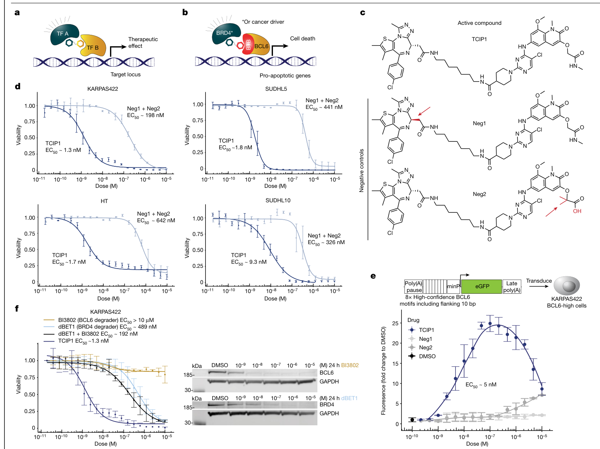
a, 利用双价分子激活或抑制内源性靶基因的通用原理设计：该分子一侧结合一种内源性转录因子 (TF) 或表观遗传调控因子，并通过化学连接链偶联至结合第二种转录因子的基团，该第二转录因子定位在靶基因的调控区，从而诱导治疗性基因的转录表达。b, 针对淋巴瘤设计的特异性TCIP：将转录激活因子 (BRD4) 或癌症驱动因子招募至位于细胞死亡基因上的BCL6转录抑制复合物处，由此不仅解除原有的转录抑制，更诱导由BCL6反向驱动的主动转录。c, 活性最强的BCL6–BRD4双功能分子TCIP1以及两个阴性对照分子Neg1（缺乏BRD4结合力）和Neg2（缺乏BCL6结合力）的化学结构式。d, TCIP1对化疗耐药、TP53突变的DLBCL细胞系KARPAS422以及其他三株高表达BCL6的DLBCL细胞系活力的杀伤抑制曲线。n = 4次独立生物学重复，数据以均值 ± 标准差 (mean ± s.d.) 表示。e, BCL6荧光报告系统的设计示意图，以及在KARPAS422细胞中加药处理8小时后TCIP1对该报告系统的剂量依赖性激活效应。n = 4次独立生物学重复，数据为均值 ± s.d.；minP代表微小基础启动子 (minimal promoter)。f, TCIP1与BRD4降解剂或BCL6降解剂对细胞活力抑制效应的横向对比（n = 3次独立生物学重复，均值 ± s.d.）。d与f图中的细胞活力曲线测定均在加药处理72小时后进行。
a, An endogenous target gene is activated or repressed using a bivalent molecule binding one endogenous transcription factor (TF) or epigenetic regulator on one side, chemically linked to a moiety that binds to a second transcription factor that binds to the regulatory region of a target gene, which might induce production of a therapeutic gene. b, A specific TCIP that recruits a transcriptional activator (BRD4) or cancer driver to the BCL6 repressor on cell death genes, thereby derepressing transcription and inducing transcription driven by BCL6. c, Chemical structures of the most potent BCL6–BRD4 TCIP, TCIP1 and the negative controls Neg1 (BRD4 non-binding) and Neg2 (BCL6 non-binding). d, TCIP1 effect on cell viability of the chemotherapy-resistant, TP53-mutant DLBCL cell line KARPAS422, as well as three other DLBCL cell lines with high levels of BCL6. n = 4 biological replicates, mean ± s.d. e, Design and activation of a BCL6 reporter with TCIP1 in KARPAS422 cells at 8 h after drug addition. n = 4 biological replicates, mean ± s.d. minP, minimal promoter. f, Comparison of TCIP1 effect on cell viability with the effect of BRD4 or BCL6 degraders (n = 3 biological replicates, mean ± s.d). Viability curves in d and f are after 72 h of drug treatment.
Cell killing requires a ternary complex
细胞杀伤效应依赖于三元复合物 (Ternary Complex) 的形成
The 1,000-fold increase in potency of TCIP1 over BRD4 or BCL6 degradation suggested the formation of a gain-of-function ternary complex between BRD4, BCL6 and TCIP1. We carried out chemical rescue experiments in which we titrated increasing concentrations of either JQ1 or BI3812 to multiple DLBCL cell lines, against constant concentrations of TCIP1 that kill 50–95% of cells within 72 h. JQ1 or BI3812 prevented death by TCIP1, indicating that both the BRD4-binding and the BCL6-binding side of TCIP1 are essential for effective killing (Fig. 2a,b). Examination of other DLBCL lines indicated that death of cell lines with little or no BCL6 could not be rescued (Extended Data Fig. 2a–c), and that in cell lines with low levels of BCL6, the potency of TCIP1 was comparable with Neg2, suggesting that the effects of TCIP1 in lines without BCL6 are due to simple BRD4 inhibition (Extended Data Fig. 2d,e).
相较于单纯降解BRD4或BCL6，TCIP1展现出高达1000倍的杀伤效力提升，这强烈提示在BRD4、BCL6与TCIP1之间形成了一种具有功能获得性 (gain-of-function) 的三元复合物 (ternary complex)。我们开展了化学救援实验 (chemical rescue experiments)：在多个DLBCL细胞系中，我们维持能够在72小时内杀灭50–95%细胞的恒定浓度TCIP1，同时滴加浓度梯度的游离单体JQ1或BI3812。结果显示，过量的JQ1或BI3812均能有效阻止TCIP1诱导的细胞死亡，这表明TCIP1的BRD4结合端与BCL6结合端对于实现高效细胞杀伤都是必不可少的 (Fig. 2a,b)。对其他DLBCL细胞系的检测表明，在几乎不表达或完全缺失BCL6的细胞系中，细胞死亡无法被竞争性单体所救援 (Extended Data Fig. 2a–c)；而在BCL6低表达的细胞系中，TCIP1的杀伤效力与阴性对照分子Neg2相当，这提示TCIP1在缺失BCL6的细胞系中所表现出的微弱效应仅仅源于对BRD4的基础抑制作用 (Extended Data Fig. 2d,e)。
To quantify the direct interaction between TCIP1, BRD4 and BCL6, we developed a time-resolved fluorescence resonance energy transfer (TR-FRET) assay based on the proximity of the BTB domain of BCL6 labelled with fluorescein isothiocyanate (FITC) to bromodomain 1 (BD1) of BRD4 detected with an anti-histidine tag, terbium-conjugated antibody (Fig. 2c). Formation of a ternary complex in vitro, related to TR-FRET peak height and area under the curve33, was detected using TCIP1 as well as multiple TCIP molecules shown in Fig. 2e.
为了定量测定TCIP1、BRD4与BCL6之间的直接相互作用，我们建立了一种时间分辨荧光共振能量转移 (time-resolved fluorescence resonance energy transfer, TR-FRET) 分析方法。该方法基于被异硫氰酸荧光素 (FITC) 荧光标记的BCL6 BTB结构域与通过铽 (terbium, Tb) 偶联抗组氨酸标签抗体所检测的BRD4第1溴结构域 (BD1) 之间的空间邻近性 (Fig. 2c)。体外三元复合物的形成量与TR-FRET信号的峰高及曲线下面积 (area under the curve, AUC) 直接相关33；利用该体系，我们成功检测到了TCIP1以及Fig. 2e中展示的多种TCIP衍生物分子所诱导的三元复合物组装。
One reason for the broad hook effect observed in the TR-FRET assay for TCIP1 and other potent TCIPs (Fig. 2c,e and Extended Data Fig. 3a) is the formation of cooperative protein–protein interactions induced by the drug, such as a molecular glue9,34,35. To examine this in detail, we carried out isothermal calorimetry binary and ternary titrations of TCIP1, BRD4(BD1) and BCL6(BTB). Both binary interactions of BCL6–TCIP1 and BRD4–TCIP1 were weak (Kd of BRD4–TCIP1 = 5.08 µM; Kd of BCL6–TCIP1 > 1 mM; Extended Data Fig. 3b), but the ternary complex affinity was Kd of BRD4–TCIP1–BCL6 = 340 ± 108 nM (mean ± s.d., n = 3) (Fig. 2d, left). Using an orthogonal method, biolayer interferometry, we obtained a similar affinity of Kd of BRD4–TCIP1–BCL6 = 293 ± 132 nM (Fig. 2d, right) and confirmed the weak interaction between TCIP1 and BCL6(BTB). We verified the published affinities of JQ1 to BRD4(BD1) and BI3812 to BCL6(BTB), and also that the protein domains do not interact on their own (Extended Data Fig. 3b). Biolayer interferometry measurements also revealed that the ternary complex has a slow off-rate of 26 ms−1 with a half-life of 30 s (Extended Data Fig. 3c–e). Together, the data indicate that TCIP1 induces a stable, cooperative protein–protein interaction between bromodomain 1 of BRD4 and the BTB domain of BCL6.
在TR-FRET分析中，对于TCIP1和其他高活性TCIP分子所观察到的宽广钩状效应 (broad hook effect) (Fig. 2c,e 以及 Extended Data Fig. 3a)，其重要原因之一在于该化合物诱导了类似于分子胶 (molecular glue) 的协同蛋白质–蛋白质相互作用 (cooperative protein–protein interactions)9,34,35。为了深入剖析这一机制，我们对TCIP1、BRD4(BD1)与BCL6(BTB)进行了等温滴定量热法 (isothermal titration calorimetry, ITC) 的二元与三元滴定测定。BCL6–TCIP1与BRD4–TCIP1两者的二元亲和力均极其微弱（BRD4–TCIP1的Kd = 5.08 µM；BCL6–TCIP1的Kd > 1 mM；Extended Data Fig. 3b），然而三元复合物的亲和力却大幅提高（解离常数大幅降至 Kd (BRD4–TCIP1–BCL6) = 340 ± 108 nM） (均值 ± s.d., n = 3) (Fig. 2d, 左侧)。利用另一种正交生物物理学方法——生物膜干涉技术 (biolayer interferometry, BLI)，我们测得了高度吻合的三元亲和力：Kd (BRD4–TCIP1–BCL6) = 293 ± 132 nM (Fig. 2d, 右侧)，并再次证实了TCIP1与BCL6(BTB)之间单独二元结合的微弱性。我们同时验证了文献已报道的JQ1对BRD4(BD1)以及BI3812对BCL6(BTB)的亲和力，并且证明了在缺乏药物时这两个蛋白质结构域自身互不发生直接相互作用 (Extended Data Fig. 3b)。生物膜干涉测定还进一步揭示，该三元复合物具有非常缓慢的解离速率 (off-rate koff = 26 ms−1)，其解离半衰期长达30秒 (Extended Data Fig. 3c–e)。综合上述数据表明：TCIP1诱导了BRD4第1溴结构域与BCL6 BTB结构域之间高度稳定且具有协同正效应的蛋白质–蛋白质相互作用。
TCIP1 was the most potent in cell killing among a small library of related TCIPs using different linkers (Fig. 2e). To better understand the relationship between the molecular structure and cellular activity of TCIP, we analysed the relationship between BCL6 reporter transactivation in DLBCL cells and favourable ternary complex formation in vitro and inside the cell (Fig. 2f,g). The most potent TCIPs at cell killing and activating the BCL6 reporter also had high affinities of in vitro and intracellular ternary complex formation (Fig. 2f,g and Extended Data Fig. 3f). The data are consistent with the requirement of an intracellular ternary complex of BRD4, TCIP1 and BCL6 for the activation of cell death.
在包含不同连接链结构的相关TCIP小分子化合物库中，TCIP1在杀灭肿瘤细胞方面表现出最强的效力 (Fig. 2e)。为了更深入理解TCIP的分子化学结构与其细胞生物学活性之间的构效关系 (structure-activity relationship, SAR)，我们分析了DLBCL细胞中BCL6荧光报告系统的转录反式激活水平与体外及活细胞内优势三元复合物形成之间的相关性 (Fig. 2f,g)。那些在杀伤细胞和激活BCL6报告基因方面效力最强的TCIP分子，同样在体外和细胞内展现出最高的三元复合物形成亲和力 (Fig. 2f,g 以及 Extended Data Fig. 3f)。这些实验数据高度一致地证实：在细胞内形成由BRD4、TCIP1和BCL6组成的三元复合物，是激活下游程序性细胞死亡的绝对必要前提。
Fig. 2 | TCIP1 functions by inducing ternary complex formation.
图 2 | TCIP1 通过诱导形成三元复合物发挥功能。
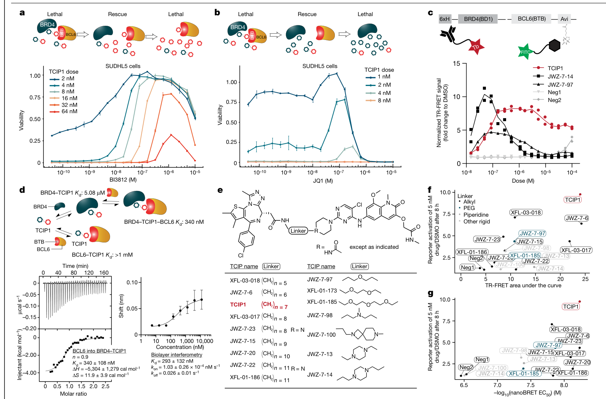
a, 单体BI3812针对TCIP1的竞争性滴定救援实验。在SUDHL5 DLBCL细胞系中，以2至64 nM能够杀灭90%细胞的TCIP1浓度为基准，同时加入所示浓度梯度的游离BI3812。n = 3次独立生物学重复，数据表示为均值 ± s.d.，加药培养72小时后测定。b, 单体JQ1针对TCIP1的竞争性滴定救援实验。n = 3次独立生物学重复，均值 ± s.d.，加药处理72小时。c, 测定小分子依赖性BRD4(BD1)与BCL6(BTB)三元复合物形成的TR-FRET实验。图中绘制了在不同连接链结构分类中（在细胞活力测定中）效力最强的一组代表性TCIP化合物。在所有设计的分子中，TCIP1展现出最高的三元复合物诱导效力。每个数据点代表一次独立重复（为3次技术重复的平均值）；图中绘制了平均值折线。d, 由TCIP1、BRD4(BD1)与BCL6(BTB)结构域诱导的协同结合效应分析。左图展示了等温滴定量热法 (ITC) 测定三元复合物解离常数Kd的代表性曲线；二元亲和力测定见Extended Data Fig. 3b；n = 3次独立重复，均值 ± s.d.。所示ITC参数为将20:1的BRD4(BD1):TCIP1混合液滴定至BCL6(BTB)溶液中。右图为生物膜干涉 (BLI) 三元结合测定，采用固相化固定的BCL6(BTB)和溶液相BRD4(BD1)。e, TCIP分子的连接链结构优化。标注了连接链类别与链长碳原子数。f, KARPAS422细胞中BCL6报告基因激活EC50与各所示TCIP化合物体外TR-FRET三元复合物形成EC50之间的相关性散点图。g, 在HEK293T细胞中利用nanoBRET测定法原位检测全长BCL6与BRD4在活细胞内形成三元复合物的剂量反应曲线。n = 3次独立重复，均值 ± s.d.。
a, Competitive titration of BI3812 against TCIP1. TCIP1 was added at concentrations from 2 to 64 nM that killed 90% of SUDHL5 DLBCL cells at the same time as addition of the indicated concentrations of BI3812. n = 3 biological replicates, mean ± s.d., 72 h of drug treatment. b, Competitive titration of JQ1 against TCIP1. n = 3 biological replicates, mean ± s.d, 72 h of drug treatment. c, TR-FRET assay to measure molecule-dependent ternary complex formation between BRD4(BD1) and BCL6(BTB). Plotted are a representative set of TCIPs that were the most potent (in cell viability assays) within each category of linker structure. TCIP1 had the highest potency of all designed molecules. Each point represents an independent replicate, which is the mean of three technical repeats; the mean value line is drawn. d, Analysis of cooperative binding induced by TCIP1 and the BRD4(BD1) and BCL6(BTB) domains. A representative ternary complex Kd measurement by isothermal calorimetry is shown. For binary measurements see Extended Data Fig. 3b. n = 3 independent replicates, mean ± s.d. Isothermal calorimetry parameters shown are 20:1 BRD4(BD1):TCIP1 titrated into BCL6(BTB). Right, biolayer interferometry ternary binding measurement using immobilized BCL6(BTB) and BRD4(BD1) in solution. e, Linker structure optimization for TCIP molecules. Linker category and chain length are indicated. f, Correlation between the EC50 for activation of the BCL6 reporter gene in KARPAS422 cells and the in vitro TR-FRET ternary complex formation EC50 for each indicated TCIP. g, Detection of in-cell ternary complex formation between full-length BCL6 and BRD4 by nanoBRET assay in HEK293T cells. n = 3 independent replicates, mean ± s.d.
Mechanism of TCIP1-mediated Cell Killing
TCIP1 介导细胞杀伤的促凋亡转录机制
Apoptosis throughout the cell cycle
贯穿整个细胞周期的全周期细胞凋亡诱导
To characterize the cell death observed with TCIP1, we quantified cells that have externalized phosphatidylserine by staining with annexin V. We observed a dose-dependent increase in the number of annexin-positive cells, at 10 nM TCIP1, at 24 h (Extended Data Fig. 4a). TCIP1 induced detectable apoptosis by 4–8 h (Extended Data Fig. 4b).
为了表征TCIP1所诱导的细胞死亡特征，我们通过Annexin V荧光染色对发生磷脂酰丝氨酸外翻 (externalized phosphatidylserine) 的凋亡细胞进行了定量分析。在加药处理24小时后，我们观察到在10 nM TCIP1作用下Annexin V阳性细胞数量呈现剂量依赖性显著增加 (Extended Data Fig. 4a)。TCIP1在加药后仅4至8小时内即可诱导出可被明确检测到的早期细胞凋亡信号 (Extended Data Fig. 4b)。
Cancers can evade cell killing by many chemotherapeutics that function only during a specific stage of the cell cycle. To investigate the cell-cycle dependence of the apoptosis caused by TCIP1, we performed cell-cycle analysis in concert with TUNEL staining, which measures DNA fragmentation (Extended Data Fig. 4c). The cell-cycle analysis revealed that TCIP1 induced both a G1/S and G2/M block in the cell cycle (Extended Data Figs. 4d and 5a). By examining DNA cleavage with the TUNEL assay, we found that cell death occurred during all phases of the cell cycle (Extended Data Figs. 4e and 5a). To further examine the mechanism of cell death by TCIP1, we used serum starvation to arrest the cell cycle in G0/G1. The cells became even more sensitive to TCIP1, exhibiting an EC50 of 250 pM compared with 3.2 nM without arrest (Extended Data Fig. 4f). This observation indicates that TCIP1 produces cell death by activating more than a single cell death pathway.
恶性肿瘤往往能够逃避许多仅在特定细胞周期时相发挥作用的化疗药物的杀伤。为了探究TCIP1诱导细胞凋亡对细胞周期的依赖性，我们将细胞周期分析与检测DNA断裂片段的TUNEL染色技术结合进行分析 (Extended Data Fig. 4c)。细胞周期检测结果显示，TCIP1诱导了细胞周期在G1/S期和G2/M期的双重阻滞 (Extended Data Figs. 4d 与 5a)。通过TUNEL分析检测DNA裂解水平，我们发现细胞死亡广泛发生在细胞周期的所有各个时相中 (Extended Data Figs. 4e 与 5a)。为了进一步深入剖析TCIP1诱导细胞死亡的机制，我们采用血清饥饿法 (serum starvation) 将细胞周期强行阻滞在G0/G1期静止状态。此时细胞对TCIP1展现出更高的敏感性：其EC50从未阻滞状态下的3.2 nM锐降至惊人的250 pM (Extended Data Fig. 4f)。这一实验观察明确证实：TCIP1是通过激活多条彼此独立且协同的细胞死亡通路来引发细胞死亡的，而非单纯依赖活跃周期分裂。
TCIP1 activates pro-apoptotic genes
TCIP1 强力激活促凋亡基因的转录表达
To define the genes involved in the induction of apoptosis by TCIP1, we carried out RNA sequencing studies 20 h after adding drug at 10 or 100 nM, when the critical genes were likely to be executing their functions. Changes in gene expression were dependent on dose (Extended Data Fig. 6a–c), and at just 10 nM TCIP1, the expression of 1,654 genes was increased, whereas the expression of 1,347 genes was reduced (Fig. 3a). Genes activated by TCIP1 were enriched for known cell-cycle arrest and pro-apoptotic targets normally repressed by BCL6, such as P21 (also known as CDKN1A), FOXO3 and PMAIP1 (also known as NOXA) (Fig. 3a and Extended Data Fig. 6b,c,e). Along with the p53 and apoptosis pathways, TCIP1 also induces the TNF pathway (Extended Data Fig. 6d). Signalling via NF-κB has been shown to be repressed by BCL6 (refs. 22,36,37). These changes in mRNA levels were paralleled by dose-dependent and time-dependent changes in protein expression in two different DLBCL cell lines, SUDHL5 and KARPAS422, with negligible effect of the chemical controls Neg1 and Neg2 (Fig. 3d–f). Of particular interest was the observation that FOXO3 is activated by 0.5 nM TCIP1 (Fig. 3e) and within 2 h by 10 nM TCIP1 (Fig. 4d). Activation of FOXO3 also displayed a hook effect (Fig. 3e), characteristic of the direct target of a bivalent molecule. FOXO3 is a master pro-apoptotic gene38 with a BCL6-binding site at its promoter39. Although FOXO3 and P21 are also known to be activated downstream of TP53 (ref. 40), which is itself a BCL6 target, TP53 is biallelically inactivated in this DLBCL line (KARPAS422) and other chemotherapy-resistant DLBCL lines killed by TCIP1. This supports the evidence in Extended Data Fig. 4 that TCIP1 derepresses multiple cell-cycle arrest and death pathways that are normally repressed by BCL6.
为了明确参与TCIP1诱导细胞凋亡的关键靶基因，我们在加入10 nM或100 nM药物后20小时（此时关键调控基因极可能正在全面执行其生物学功能）开展了全转录组RNA测序 (RNA-seq) 研究。基因表达水平的变化呈现高度的剂量依赖性 (Extended Data Fig. 6a–c)；在仅10 nM TCIP1处理下，就有1,654个基因的表达发生显著上调，而1,347个基因的表达发生下调 (Fig. 3a)。被TCIP1显著激活的基因高度富集于那些通常受到BCL6严格转录抑制的已知细胞周期阻滞与促凋亡靶标中，例如P21（亦称CDKN1A）、FOXO3以及PMAIP1（亦称NOXA）(Fig. 3a 以及 Extended Data Fig. 6b,c,e)。除p53通路与细胞凋亡通路外，TCIP1还激活了肿瘤坏死因子 (TNF) 信号通路 (Extended Data Fig. 6d)；以往已有文献表明NF-κB信号转导通路常年受到BCL6的表观遗传抑制22,36,37。上述mRNA转录本水平的激增，在两株不同的DLBCL细胞系SUDHL5与KARPAS422中均伴随着剂量依赖和时间依赖性的蛋白质水平相应上调，而化学阴性对照分子Neg1和Neg2的影响几乎微乎其微 (Fig. 3d–f)。尤为引人瞩目的是：仅0.5 nM极低浓度的TCIP1即可显著激活FOXO3蛋白的表达 (Fig. 3e)，而在10 nM TCIP1处理后2小时内即可检测到其表达上调 (Fig. 4d)。FOXO3的转录激活同样展现出了典型的“钩状效应 (hook effect)”(Fig. 3e)，这是双价诱导分子作用于直接作用靶标的标志性特征。FOXO3是一个主控型促凋亡转录因子38，其启动子区拥有高亲和力的BCL6结合位点39。尽管已知FOXO3和P21在生理状态下也可作为TP53的下游靶标被激活40（而TP53自身亦是BCL6的阻遏靶标），但本研究中测试的KARPAS422细胞系及其他被TCIP1强效杀伤的耐药DLBCL细胞系均存在TP53的双等位基因纯合失活。这一事实有力支持了Extended Data Fig. 4中的实验证据，即TCIP1能够完全独立于p53通路，直接解除并反转BCL6在生理状态下所抑制的多种细胞周期阻滞与凋亡通路。
TCIP1 represses MYC and its targets
TCIP1 强力下调致癌基因 MYC 及其下游靶基因网络
Among the group of genes whose expression was most reduced were MYC and its targets (Fig. 3b and Extended Data Fig. 6c). This is important as many DLBCLs are considered to be dependent on MYC41,42. We examined the top 100 most TCIP1-reduced genes using over 4,500 ChIP–seq datasets of human transcription factors in blood cancer cell lines43, and found the promoters of TCIP1-inhibited genes highly enriched for MYC binding in multiple datasets (Fig. 3c). Examination of MYC protein levels upon the addition of TCIP1 showed that MYC levels were reduced starting at less than 1 nM TCIP1 and within 2 h of addition of the drug (Fig. 3d,e). The chemical controls Neg1 and Neg2 did not affect MYC levels at comparable concentrations (Fig. 3f). BET/BRD4 inhibitors such as JQ1 are known to reduce the expression of MYC25, but at much higher levels of drug (500 nM) than TCIP1. We therefore hypothesized that repression of MYC is a gain-of-function consequence of the ternary complex formed by TCIP1.
在转录表达下调最显著的一组基因中，致癌转录因子MYC及其下游靶基因群居于首位 (Fig. 3b 以及 Extended Data Fig. 6c)。这一发现极其关键，因为临床上绝大多数恶性DLBCL被公认高度依赖MYC以维持其恶性增殖表型41,42。我们利用血液系统恶性肿瘤细胞系中超过4,500个公开的人类转录因子ChIP–seq数据集43，对TCIP1诱导表达下调最显著的前100个基因启动子进行了无偏性转录因子富集分析，结果发现被TCIP1抑制的基因启动子在多个数据集中均高度富集MYC的直接结合位点 (Fig. 3c)。在添加TCIP1后对MYC蛋白水平的时间与剂量检测进一步显示：在低于1 nM的极低TCIP1浓度下即可观察到MYC蛋白表达量的骤减，且在加药后2小时内即迅速发生下调 (Fig. 3d,e)。相比之下，化学阴性对照化合物Neg1和Neg2在相同浓度下对MYC蛋白水平完全没有影响 (Fig. 3f)。虽然已知单体BET/BRD4抑制剂（如JQ1）也能够通过抑制BRD4依赖的超级增强子来降低MYC表达25，但需要达到500 nM甚至更高的药物浓度才能起效（比TCIP1起效浓度高数百倍以上）。因此我们提出假说：TCIP1对MYC的高敏度抑制并非简单的BRD4抑制副产物，而是由TCIP1所介导诱导的三元复合物所产生的一种功能获得性 (gain-of-function) 调控结果。
To clarify the role of ternary complex formation for the repression of MYC as well as other gene expression and protein level changes observed, we blocked binding of TCIP1 to BCL6 by titrating the BCL6(BTB) inhibitor BI3812 against a constant concentration of 10 nM TCIP1 (Fig. 3g). Titration of BI3812 prevented downregulation of MYC, as well as reversed upregulation of p21 and FOXO3, with EC50 closely matching that of cell killing (Fig. 3g). The results confirm that binding to BCL6 is necessary for repression of MYC and activation of p21 and FOXO3, indicating that the phenotypic consequences of TCIP1 are directly dependent on the formation of the BCL6–TCIP1–BRD4 ternary complex.
为了进一步厘清三元复合物的形成对于下调MYC以及调控其他基因表达和蛋白水平变化的因果决定作用，我们在维持10 nM TCIP1恒定浓度的条件下，通过滴定递增浓度的BCL6(BTB)抑制剂BI3812来竞争性阻断TCIP1与BCL6的结合 (Fig. 3g)。随着BI3812的滴入，MYC蛋白表达的下调被彻底逆转挽救，同时p21和FOXO3的转录上调也完全被抑制回到基线，其救援EC50与细胞杀伤救援的剂量响应紧密贴合 (Fig. 3g)。这些结果确凿地证实：结合BCL6是TCIP1抑制MYC以及激活p21和FOXO3所不可或缺的前提，无可置疑地表明TCIP1的所有表型效应均直接严格依赖于BCL6–TCIP1–BRD4三元复合物的物理组装。
Fig. 3 | TCIP1 represses MYC and its targets while activating pro-apoptotic genes.
图 3 | TCIP1 抑制 MYC 及其靶基因，同时全面激活促凋亡基因网络。
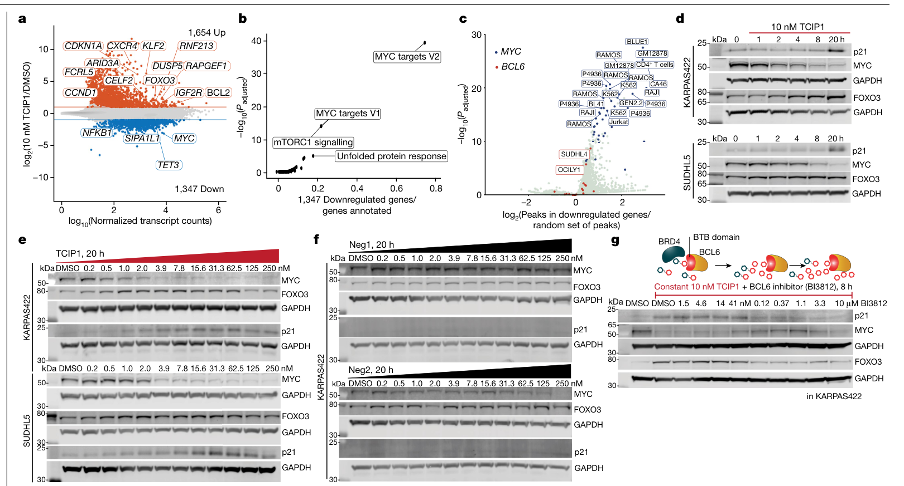
a, 在KARPAS422细胞中加入10 nM TCIP1处理20小时后的基因转录激活（中位变化：差异倍数 ≥ 2）与抑制火山散点图，图中对熟知的经典BCL6靶基因进行了高亮标注。显著性筛选阈值设定为矫正P值 (Padjusted) ≤ 0.05 且 |log2(药物/DMSO)| ≥ 1；n = 2次独立生物学重复。b, 显著下调基因群在MSigDB Hallmark癌症特征通路中高度富集于MYC靶基因集。c, 基于血液谱系细胞中超过4,500个公开ChIP–seq数据集，对表达下调最显著的前100个基因启动子进行的转录因子结合位点富集分析。对于b和c图，校正P值均采用双尾Fisher精确检验计算，并通过Benjamini–Hochberg法完成多重假设检验校正。d, 10 nM TCIP1处理后，DLBCL细胞系中MYC、p21与FOXO3蛋白水平随时间动态变化的蛋白质印迹 (Western blot) 动力学分析。e, 在两株独立的DLBCL细胞系KARPAS422与SUDHL5中，从RNA测序结果中选出的关键靶蛋白随TCIP1浓度梯度的剂量反应Western blot分析。f, 阴性对照分子Neg1和Neg2对TCIP1靶蛋白表达水平影响的阴性验证（几乎完全无改变）。在d–f图中，除KARPAS422在d和e中代表3次独立生物学重复外，所有免疫印迹图均代表2次独立生物学重复的典型结果。g, 在恒定10 nM TCIP1处理8小时背景下，滴加浓度梯度的BTB结合剂BI3812成功救援p21与FOXO3上调以及MYC下调的竞争性救援Western blot结果。代表2次独立生物学重复。在d–g的所有电泳印迹中，同一块聚丙烯酰胺凝胶上检测的标志物下方均紧随该凝胶上同步跑胶的内参蛋白GAPDH对照。
a, Gene activation (median change: fold change ≥ 2) and repression after addition of 10 nM TCIP1 in KARPAS422 cells for 20 h, with well-known BCL6 targets labelled. Significance cut-offs were Padjusted ≤ 0.05 and |log2(drug/DMSO)| ≥ 1); n = 2 biological replicates. b, Downregulated genes are significantly enriched for MYC targets (MSigDB hallmark pathways). c, Analysis of transcription factor binding of the top 100 downregulated genes in 4,500 or more public ChIP–seq datasets in blood-lineage cells. For b,c, the adjusted P values were computed by two-sided Fisher’s exact test and adjusted for multiple comparisons by Benjamini–Hochberg. d, Kinetics of protein changes in MYC, p21 and FOXO3 in DLBCL cell lines after treatment with 10 nM TCIP1. e, Dose-dependent changes in protein levels of target genes selected from the RNA sequencing results in two separate DLBCL cell lines, KARPAS422 and SUDHL5. f, Negligible effect of the negative controls Neg1 and Neg2 on protein levels of TCIP1 targets. For d–f, blots are representative of two biological replicates, except KARPAS422 in d and in e where data represent three biological replicates. g, Rescue of p21 and FOXO3 upregulation and MYC downregulation by competitive titration of the BTB binder BI3812 against constant 10 nM TCIP1 treatment for 8 h. Representative of two biological replicates. In all blots in d–g, any markers immunoblotted for the same gel are followed immediately by the loading control GAPDH run on that same gel.
Epigenetic Remodeling and Target Genes
表观遗传重塑与直接靶基因鉴定
Identification of direct targets of TCIP1
TCIP1 直接作用靶基因的鉴定
The addition of 10 nM TCIP1 to KARPAS422 cells for 1, 2 and 4 h and subsequent measurement of RNA identified a selective set of approximately 140 genes induced by TCIP1, including well-characterized BCL6-repressed targets such as the apoptotic regulators BCL2L11 (also known as BIM)44, PMAIP1, FOXO3 and BCL6. These probably represent direct transcriptional targets of TCIP1 (Fig. 4a). Almost all differential genes were increasingly activated at 1, 2 and 4 h, compared with negligible effects of the control molecules Neg1 and Neg2 (Fig. 4b). BCL6-repressed pathways such as TNF signalling and p53 pathways began to be upregulated at 1 and 2 h, and MYC targets only began to be repressed at 4 h (Extended Data Fig. 7c), consistent with reduction of MYC protein levels after 2 h (Fig. 3d). Although several genes showed reduced expression in TCIP1-treated cells at the early 1 and 2 h timepoints, in contrast to the upregulated genes, they were not statistically significantly enriched for any particular biological pathway (Extended Data Fig. 7c) and could represent general stress from the onset of DNA fragmentation. Analysis of BCL6 occupancy at promoters of upregulated genes, using published BCL6 ChIP–seq in the DLBCL line OCILY1 (ref. 39), showed that 53%, 57% and 55%, respectively, of upregulated genes at 1, 2 and 4 h had high-confidence BCL6 peaks within 1 kb of their transcription start site (see Methods). Further analysis using over 4,500 ChIP–seq datasets of various human transcription factors in blood cancer cell lines43 revealed that the promoters of TCIP1-activated genes were statistically significantly enriched for BCL6 binding in multiple datasets (Fig. 4c). These studies indicate that TCIP1 specifically activates BCL6 target genes.
向KARPAS422细胞中加入10 nM TCIP1分别处理1、2和4小时，随后进行RNA定量检测，鉴定出了一组由TCIP1特异诱导表达的约140个基因的选择性子集；其中包括受到明确表征的BCL6阻遏靶标，如促凋亡关键调控因子BCL2L11（亦称BIM）44、PMAIP1、FOXO3以及BCL6自身。这些基因极有可能代表了TCIP1的直接转录靶基因 (Fig. 4a)。与对照分子Neg1和Neg2几乎完全无影响相比，几乎所有差异表达基因在1、2和4小时均呈现渐进式递增激活 (Fig. 4b)。受到BCL6长期抑制的生物学通路（如TNF信号转导和p53信号通路）在加药后1和2小时即开始显著上调，而MYC靶基因直到4小时才开始显现下调 (Extended Data Fig. 7c)，这与加药2小时后观察到的MYC蛋白水平下降高度吻合 (Fig. 3d)。尽管在加药早期1和2小时的时间点上，TCIP1处理细胞中也有若干基因表现出表达降低，但与显著上调的基因群形成鲜明对比的是，这些早期下调基因并未在任何特定的生物学功能通路上呈现具有统计学显著性的富集 (Extended Data Fig. 7c)，推测它们可能仅反映了因DNA片段化早期启动所诱发的非特异性细胞应激反应。基于已发表的DLBCL细胞株OCILY1中BCL6的ChIP–seq数据39分析上调基因启动子区BCL6的占位情况，结果显示：在加药1、2和4小时显著上调的基因中，分别有53%、57%和55%的基因在其转录起始位点 (transcription start site, TSS) 上下游1 kb范围内拥有高置信度的BCL6结合峰 (见方法部分 Methods)。利用涵盖血液系统肿瘤细胞中多种人类转录因子的超过4,500个公开ChIP–seq数据集进行深入交叉分析43进一步揭示：TCIP1所激活的基因启动子在多个数据集中均在统计学上极其显著地富集BCL6的特异性结合 (Fig. 4c)。这些研究确凿证明：TCIP1能够高度特异性地激活BCL6的直接靶基因。
Rapid transcriptional activation by recruitment of BRD4
通过招募 BRD4 实现爆发式快速转录延伸激活
ChIP–seq studies of BRD4 after 1 h of drug addition revealed that TCIP1 produced a consistent, modest approximately 1.5-fold increase in BRD4 recruitment to BCL6 sites over the genome (Fig. 4d). This observation could indicate that TCIP1 needs to recruit only small amounts of BRD4 to produce the robust activation of BCL6 targets observed, and/or that the two other BET proteins expressed in these cells, BRD2 and BRD3, also mediate its effects. BRD4 and other BET proteins have previously been implicated largely in transcriptional elongation, particularly in mediating activation of RNA polymerase II (Pol II) elongation activity by phosphorylation of serine 2 of its C-terminal domain (CTD) (Pol II Ser2 phos)45. The other major CTD modification of Pol II is serine 5 phosphorylation (Pol II Ser5 phos), which marks paused polymerase ready to initiate transcription46. These serines are actively phosphorylated and dephosphorylated during the cycle of transcription. To closely examine the consequences of the addition of TCIP1 on transcription, we carried out short timepoint ChIP–seq experiments with antibodies specific to these CTD modifications as well as acetylation of lysine 27 on histone H3 (H3K27ac), a mark associated with active enhancers47 and promoters48 (Extended Data Fig. 8a).
在加药处理1小时后针对BRD4开展的ChIP–seq全基因组研究显示：TCIP1诱导全基因组范围内BCL6结合峰位点处的BRD4招募量呈现出一致且适度的增加（约1.5倍，即增幅约50%）(Fig. 4d)。这一实验观察可能表明：TCIP1仅需要招募极少量的BRD4，就足以对BCL6靶基因产生所观察到的爆发式强效激活；同时亦可能提示这些细胞中表达的另外两种BET家族蛋白BRD2和BRD3也协同参与介导了该效应。BRD4及其他BET蛋白以往被广泛认为主要参与转录延伸 (transcriptional elongation) 调控，特别是通过促进RNA聚合酶II (RNA polymerase II, Pol II) 羧基末端结构域 (C-terminal domain, CTD) 第2位丝氨酸的磷酸化修饰 (Pol II Ser2 phos) 来激活延伸活性45。Pol II CTD的另一主要修饰是第5位丝氨酸的磷酸化修饰 (Pol II Ser5 phos)，该修饰标志着聚合酶处于转录暂停 (paused) 并准备启动转录的状态46。在转录的动态循环周期中，这些丝氨酸位点会经历活跃的动态磷酸化与去磷酸化。为了精确解析添加TCIP1对转录过程所造成的即时动力学后果，我们利用特异性识别这些CTD磷酸化修饰以及组蛋白H3第27位赖氨酸乙酰化 (H3K27ac，一种与活性增强子47及活性启动子48密切相关的表观遗传标志物) 的特异性抗体，开展了超短时间点的ChIP–seq测序实验 (Extended Data Fig. 8a)。
We found that just 15 min of drug addition increased Pol II Ser2 phos, further increasing over 1, 2 and 4 h, reflecting immediate transcriptional elongation, at well-characterized BCL6 target pro-apoptotic genes including PMAIP1, FOXO3, BCL2L11 and BCL6 itself (Fig. 4e,g,h and Extended Data Fig. 8b). Accompanying this immediate elongation effect was a loss of Pol II Ser5 phos, which could reflect a redistribution effect and/or a switch from pausing to productive elongation (Fig. 4e, middle row). Effects at downregulated genes were similar to those at unchanged genes and probably reflect background or a stress response. We further ascertained that BRD4 levels increase at the promoters of upregulated genes selectively, approximately 150% after just 1 h of TCIP1 addition (Fig. 4f, top row), consistent with its increase at BCL6-binding sites genome wide (Fig. 4d).
我们发现：在加药处理仅仅15分钟后，Pol II Ser2磷酸化水平即显著升高，并在1、2和4小时内持续进一步增强；这直接反映出在受到明确表征的BCL6靶促凋亡基因（包括PMAIP1、FOXO3、BCL2L11以及BCL6自身）基因体 (gene bodies) 上即时发生的转录延伸 (immediate transcriptional elongation) (Fig. 4e,g,h 以及 Extended Data Fig. 8b)。伴随这一即时转录延伸效应的，是Pol II Ser5磷酸化的同步降低，这可能反映了聚合酶在染色质上的空间再分布效应，以及/或者聚合酶由启动子暂停状态向高产延伸状态的快速切换 (Fig. 4e, 中间行)。在表达下调的基因上所观察到的效应与未发生改变的基底基因相似，推测主要反映背景噪音或非特异性应激反应。我们进一步确证：在加药仅1小时后，BRD4仅选择性地在转录上调基因的启动子区发生富集增加（增幅约150%）(Fig. 4f, 顶部行)，这与全基因组范围内BCL6结合峰位点处BRD4的普遍增加高度吻合 (Fig. 4d)。
We used our H3K27ac ChIP–seq data to examine the consequences at regulatory regions such as active enhancers where there is a 20 times higher cumulative load of BRD4 than at other regions of the genome49,50. BRD4 occupancy decreased at enhancers approximately 10% 1 h after addition of TCIP1 (Fig. 4f, bottom row; example genome track of the OCA-B super-enhancer is shown in Extended Data Fig. 8e). In addition, there were negligible changes in H3K27ac either at promoters of differential genes (Fig. 4e) or genome wide; after 2 h, only 126 peaks increased, whereas 70 peaks decreased (|log2(TCIP1/DMSO)| ≥ 0.5, Padjusted ≤ 0.05) out of 51,678 total consensus peaks reconstructed (Extended Data Fig. 8c). This is consistent with the genetic studies of Melnick and colleagues, which point to a competition model between BCL6 and other transcription factors underlying repression51. Our data support a model in which TCIP1 borrows a fraction of the total BRD4, recruits it to BCL6-binding sites and BCL6-regulated genes, and rapidly activates transcriptional elongation and the expression of these target genes.
我们利用H3K27ac ChIP–seq数据，深入检测了TCIP1对活跃调控区（如活性增强子）所产生的影响；在生理状态下，活性增强子区域所富集的BRD4累积载量比基因组其他常规区域高出20倍以上49,50。在添加TCIP1处理1小时后，增强子区域的BRD4占位仅发生了约10%的轻微下调 (Fig. 4f, 底部行；以OCA-B超级增强子为例的代表性基因组轨迹见 Extended Data Fig. 8e)。此外，无论是在差异表达基因的启动子区 (Fig. 4e) 还是在全基因组水平，H3K27ac修饰均未发生实质性改变：在重构出的全基因组总计51,678个共有峰 (consensus peaks) 中，加药2小时后仅有126个峰增加、70个峰减少（阈值设定为 |log2(TCIP1/DMSO)| ≥ 0.5, Padjusted ≤ 0.05）(Extended Data Fig. 8c)。这一发现与Melnick及其合作者所开展的经典遗传学研究高度契合，他们指出转录抑制的底层机制在于BCL6与其他激活型转录因子在同一染色质位点上的竞争性占位51。我们的全套数据充分支持这样一种工作模型：TCIP1仅仅是“借用 (borrows)”了细胞内总BRD4库中的极小一部分，将其精准定向招募至BCL6结合位点及BCL6调控基因处，从而爆发式地快速激活这些促死靶基因的转录延伸与高效表达。
Rewiring the BCL6 autoinhibitory circuit
重新布线 BCL6 基因自身的负向自我抑制前馈回路
BCL6 expression is subject to negative autoregulation that originates from BCL6-binding sites in the first intron of the BCL6 gene, which are often deleted or mutated in DLBCL52,53, providing protection from cell death. The TCIPs that we have designed should convert this negative-feedback pathway to a positive-feedback pathway, by replacing the epigenetic repression that BCL6 provides54, with transcriptional activation by BRD4. To determine whether this prediction is correct, we examined BCL6 mRNA levels after treatment with TCIP1 and found that within 1–2 h of the addition of 10 nM TCIP1, the long isoform of BCL6 is upregulated at the expense of its short isoform due to transcription and alternative splicing of exon 7 in the BCL6 gene (Fig. 4i,j). The BCL6 protein was significantly increased in a dose-dependent manner upon addition of TCIP1, also showing a hook effect, in two different DLBCL cell lines (Fig. 4k). Simultaneous addition of a nanomolar CDK9 inhibitor, NVP2 (ref. 45), to block elongation of transcription, prevented upregulation of BCL6 protein levels (Fig. 4l). The chemical controls Neg1 and Neg2 also did not affect BCL6 (Extended Data Fig. 9a). The kinetics of BCL6 induction were similar in two separate DLBCL cell lines (SUDHL5 and KARPAS422) (Extended Data Fig. 9c); in addition, BRD4 protein levels did not change substantially (Extended Data Fig. 9b).
BCL6自身的转录表达在生理状态下受到源自其第1内含子 (first intron) 中BCL6结合位点的负向自身自动反馈抑制 (negative autoregulation)；而在临床DLBCL患者中，这些内含子自抑结合位点频繁发生缺失或体细胞突变52,53，从而使肿瘤细胞能够维持BCL6的高表达并由此逃避细胞死亡。我们所设计的TCIP应该能够通过用BRD4所赋予的强大转录激活能力替换掉BCL6原本介导的表观遗传沉默54，将这一“负反馈 (negative-feedback)”通路彻底扭转为“正反馈 (positive-feedback)”通路。为了验证该理论预测是否属实，我们检测了TCIP1处理后BCL6 mRNA的转录本水平，结果发现在加入10 nM TCIP1后仅1至2小时内，由于BCL6基因发生转录加速以及第7外显子的选择性剪接 (alternative splicing)，BCL6的长异构体 (long isoform, BCL6L) 发生爆发式上调，同时短异构体 (short isoform, BCL6S) 比例相对下降 (Fig. 4i,j)。在两株不同的DLBCL细胞系中，随着TCIP1的加入，BCL6总蛋白水平以剂量依赖性方式显著激增，且同样呈现出典型的钩状效应 (Fig. 4k)。与此同时，加入纳摩尔浓度的CDK9小分子抑制剂NVP2（参考文献45）以靶向阻断转录延伸过程，能够完全阻遏BCL6蛋白表达的上调 (Fig. 4l)。化学阴性对照分子Neg1和Neg2对BCL6的表达量完全没有任何影响 (Extended Data Fig. 9a)。在两株独立的DLBCL细胞系SUDHL5与KARPAS422中，BCL6的上调诱导动力学进程高度相似 (Extended Data Fig. 9c)；此外在此过程中，细胞内BRD4的总蛋白水平未发生实质性改变 (Extended Data Fig. 9b)。
Because the primary transcript of BCL6 is 24 kb and Pol II moves at 2–3 kb per minute, we hypothesized that transcription of BCL6 must start almost immediately after addition of TCIP1. Indeed, in our ChIP–seq data, we observed that elongation of polymerase starts to increase at exon–intron junctions at just 15 min, and continues to spread through the gene body at 1, 2 and 4 h after addition of 10 nM TCIP1 (Fig. 4h). BRD4 density increases modestly by 1 h at the known intronic BCL6-binding site. Finally, as in Fig. 3g, to clarify the role of ternary complex formation for the BCL6 upregulation observed, we titrated the BCL6(BTB) inhibitor BI3812 against a constant concentration of 10 nM TCIP1 and found that we could reverse the upregulation of BCL6 (Fig. 4m). Our data indicate that BCL6 is itself a direct target of TCIP1 and TCIP1 can rewire its repressive negative-feedback pathway into a positive-feedback pathway, amplifying the potency of the molecule in killing cancer cells (model in Extended Data Fig. 9d).
由于BCL6的初级初生转录本 (primary transcript) 全长达24 kb，而RNA聚合酶II在真核细胞染色质上的行进速度约为每分钟2至3 kb，因此我们推论：在加入TCIP1之后，BCL6基因的转录激活必然是几乎瞬间启动的。事实上，在我们的短时间点ChIP–seq测序数据中，我们明确观察到：在加入10 nM TCIP1处理仅仅15分钟后，在外显子–内含子连接处 (exon–intron junctions) 的聚合酶转录延伸密度便开始急剧上升，并在加药1、2和4小时后持续向整个基因体全长扩散蔓延 (Fig. 4h)。在已知内含子BCL6结合位点处，BRD4的结合密度在1小时内呈现温和而明确的增加。最后，与Fig. 3g一致，为了阐明三元复合物形成对于所观察到的BCL6上调的因果作用，我们在恒定10 nM TCIP1处理下滴定浓度梯度的BCL6(BTB)抑制剂BI3812，结果发现能够完全逆转BCL6蛋白的上调表达 (Fig. 4m)。我们的整套实验数据确凿证明：BCL6自身正是TCIP1的直接转录靶基因，TCIP1成功将其内源性的抑制性负反馈调控回路彻底重新布线为高活性的正反馈级联回路，从而在肿瘤细胞内部呈几何级数放大了该分子诱导细胞凋亡的杀伤效力 (详见 Extended Data Fig. 9d 机制模式图)。
Fig. 4 | Rapid activation of BCL6 target genes by recruitment of BRD4.
图 4 | 通过招募 BRD4 快速爆发式激活 BCL6 靶基因。
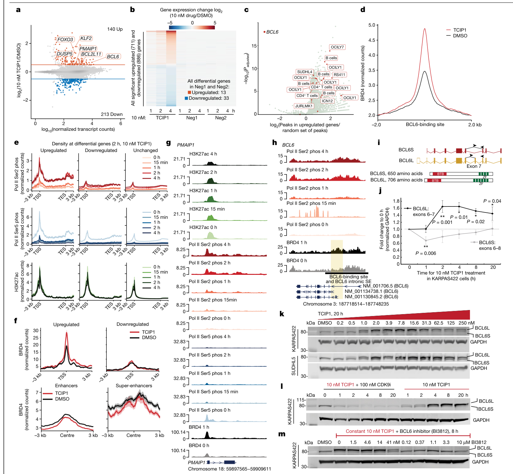
a, 在KARPAS422细胞中加入10 nM TCIP1处理2小时后的基因表达变化火山图，高亮标注了知名的BCL6靶基因。P值由双尾Wald检验计算并经Benjamini–Hochberg多重比较矫正。差异基因筛选标准：Padjusted ≤ 0.05 且 |log2(药物/DMSO)| ≥ 0.5；n = 3次独立生物学重复。b, 在10 nM TCIP1处理1、2和4小时后，与对照分子Neg1和Neg2相比的基因表达动态热图。c, 基于血液谱系细胞中超过4,500个公开ChIP–seq数据集，对TCIP1处理2小时后显著上调基因启动子区所富集的转录因子结合位点进行的富集分析。P值通过双尾Fisher精确检验计算并经Benjamini–Hochberg多重矫正。d, 在KARPAS422细胞中加入100 nM TCIP1处理1小时后，全基因组BCL6峰顶位点 (BCL6 summits) 处BRD4的结合密度分布。e, 在10 nM TCIP1处理后，沿a图中2小时RNA测序鉴定的差异基因基因体（上下游各±3 kb）Pol II Ser2磷酸化、Pol II Ser5磷酸化及H3K27ac的时间依赖性密度元图谱 (metaprofiles)。TES代表转录终止位点 (transcription end site)；TSS代表转录起始位点 (transcription start site)。f, 如e图所示差异基因处以及由H3K27ac鉴定的增强子与超级增强子处的BRD4结合密度。e图中的元轮廓曲线与阴影区域代表来自外源内参标准化 (spike-in-normalized) 与输入对照标准化 (input-normalized) ChIP–seq数据的均值 ± 标准误 (mean ± s.e.)；f图中代表来自测序深度标准化 (sequence-depth-normalized) 与输入标准化的均值 ± s.e.。g, 加入10 nM TCIP1后PMAIP1基因位点处的ChIP–seq基因组轨道图。h, BCL6基因位点处的ChIP–seq轨道图，并展示了不同的选择性剪接转录本；SE代表超级增强子 (super-enhancer)。g与h图中的Pol II Ser2 phos、Pol II Ser5 phos与H3K27ac轨道均经spike-in和input校正，BRD4轨道经测序深度和input校正。i, BCL6不同蛋白质异构体的结构域示意图；ZF代表锌指结构域 (zinc finger)。j, 通过反转录定量PCR (RT-qPCR) 利用针对各异构体特异性外显子–外显子交界处的引物（如i中箭头所示），测定BCL6长异构体与短异构体（分别为BCL6L和BCL6S）的mRNA水平。n = 3次独立生物学重复，均值 ± s.d.。P值通过双尾非配对Student's t检验计算。k, 1 nM或更低浓度TCIP1对BCL6L异构体的剂量依赖性诱导。l, 同时加入10 nM TCIP1与100 nM CDK9抑制剂 (CDK9i) NVP2以阻断转录延伸对BCL6表达的影响。m, 针对10 nM TCIP1滴加BI3812的竞争性救援Western blot。k–m中的电泳印迹均代表2次独立生物学重复的典型结果。
a, Gene expression changes after 10 nM TCIP1 for 2 h in KARPAS422, with well-known BCL6 targets labelled. P values were computed by a two-sided Wald test and adjusted for multiple comparisons by Benjamini–Hochberg. Differential gene cut-offs: Padjusted ≤ 0.05 and |log2(drug/DMSO)| ≥ 0.5; n = 3 biological replicates. b, Changes in gene expression after 1, 2 and 4 h of 10 nM TCIP1 compared with Neg1 and Neg2. c, Enrichment analysis of transcription factor binding in promoters of genes upregulated at 2 h after TCIP1 treatment in more than 4,500 public ChIP–seq datasets in blood-lineage cells. P values were computed by a two-sided Fisher’s exact test and adjusted for multiple comparisons by Benjamini–Hochberg. d, BRD4 density in KARPAS422 cells at BCL6 summits after 1 h of 100 nM TCIP1. e, Time-dependent density of Pol II Ser2 phos, Pol II Ser5 phos and H3K27ac along gene bodies that are ±3 kb after 10 nM TCIP1, at differential genes identified by 2 h of RNA sequencing in a. TES, transcription end site; TSS, transcription start site. f, BRD4 density at differential genes, as in e, and enhancers and super-enhancers identified by H3K27ac (Methods). Metaprofiles and shading in e represent mean ± s.e. from spike-in-normalized and input-normalized ChIP–seq data, and in f represent mean ± s.e. from sequence-depth-normalized and input-normalized ChIP–seq data. g, ChIP–seq tracks at PMAIP1 after addition of 10 nM TCIP1. h, Tracks at the BCL6 locus, with alternative transcripts shown. SE, super-enhancer. Pol II Ser2 phos, Pol II Ser5 phos and H3K27ac tracks in g,h are spike-in- and input-normalized, and BRD4 tracks are sequence-depth- and input-normalized. i, Structures of BCL6 isoforms. ZF, zinc finger. j, mRNA of long and short isoforms of BCL6 (BCL6L and BCL6S, respectively), measured by quantitative PCR with reverse transcription by primers specific to isoform-unique exon–exon junctions (shown by arrowheads in i). n = 3 biological replicates, mean ± s.d. P values were calculated by a two-tailed, unpaired Student’s t-test. k, Induction of the BCL6L isoform by 1 nM or less TCIP1. l, Simultaneous treatment of 10 nM of TCIP1 and 100 nM of the CDK9 inhibitor (CDK9i) NVP2 to block elongation. m, Competitive titration of BI3812 against 10 nM TCIP1. The blots in k–m are representative of two biological replicates.
Cell Type Specificity and Generality
细胞类型特异性与TCIP策略的普适性
Cell-type-specific activity of TCIP1
TCIP1 的细胞类型特异性生物学活性与体内安全性评估
BCL6-knockout mice die of a complex inflammatory reaction that has been dissected to specific regions of the protein55. Because TCIP1 requires engagement of both BCL6 and BRD4, and also operates at a concentration that would occupy only a fraction of the total BCL6 molecules (unlike a degrader or inhibitor), we were curious about the potential toxicity of TCIP1. We evaluated the tolerability, pharmacokinetic properties and target engagement of TCIP1 in wild-type C57BL/6 mice treated for 5 days with 10 mg kg−1 TCIP1 once daily by intraperitoneal injection. TCIP1 induced dramatic transcriptomic changes in the spleen despite comparable tissue concentrations of drug (Fig. 5a,b). Serum concentrations were approximately 100–400-fold higher than expected therapeutic doses (Fig. 5c). Notable genes upregulated in DLBCL cells, such as FOXO3, were also upregulated in the spleen as well as other known BCL6 targets in lymphocytes (Fig. 5d and Supplementary Table 1). Despite the large transcriptomic changes in the spleen, TCIP1 was well tolerated with no adverse effects noticed and no significant changes in mouse body weight (Fig. 5e). Haematoxylin and eosin staining and examination (by H.V.) also did not reveal noticeable abnormalities such as inflammatory infiltrates or apoptotic cells (Fig. 5f). We also observed a 200–400-fold lower sensitivity in primary human fibroblasts (EC50 of approximately 470 nM) and lymphocytes (EC50 of approximately 210 nM) (Fig. 5g,h). T and B lymphocytes are particularly germane because they have among the highest levels of BCL6 (ref. 56). The data support the cellular evidence that TCIP1 acts in a context-specific manner dependent on coincident expression of BRD4 and BCL6.
纯合敲除BCL6的基因工程小鼠 (BCL6-knockout mice) 会死于极为复杂的严重致死性全身炎症反应，这种炎症表型已被精确解析并归因于该蛋白的特定结构功能域55。鉴于TCIP1发挥效应必须同时结合BCL6与BRD4，并且其起效浓度仅需结合细胞内总BCL6分子中的极小一部分（这与必须接近100%完全抑制靶标的传统抑制剂或彻底消除蛋白的降解剂有着本质区别），因此我们对TCIP1在体内的潜在毒性表现极为关注。我们在野生型C57BL/6小鼠中系统评估了TCIP1的耐受性、药代动力学 (pharmacokinetics, PK) 特征以及体内靶标结合效应：给予小鼠以每天一次10 mg kg−1剂量的TCIP1进行连续5天的腹腔注射 (intraperitoneal injection, i.p.)。尽管TCIP1在肝脏、肺部和脾脏中达到了相当的组织药物累积浓度，但TCIP1在脾脏（免疫中枢器官）中引发了极其剧烈的转录组改变 (Fig. 5a,b)。小鼠血清药物峰值浓度比预期的治疗有效剂量高出约100至400倍 (Fig. 5c)。在离体DLBCL细胞系中显著上调的关键标志基因（如FOXO3）在小鼠脾脏中同样发生显著上调，淋巴细胞中其他已知的BCL6生理靶基因亦是如此 (Fig. 5d 与 补充表格1 Supplementary Table 1)。尽管在脾脏中引起了广泛的转录组重塑，但小鼠对TCIP1展现出极佳的体内耐受性：未观察到任何药物不良反应，小鼠体重亦未出现任何显著下降 (Fig. 5e)。经病理学家 (H.V.) 对肺脏和脾脏组织进行的苏木精-伊红 (H&E) 染色与组织病理学镜检证实：未见任何明显的病理异常，如炎性细胞浸润 (inflammatory infiltrates) 或异常细胞凋亡病灶 (Fig. 5f)。此外，在离体测试中，原代人成纤维细胞（EC50约为470 nM）与原代人扁桃体淋巴细胞（EC50约为210 nM）对TCIP1的敏感性比恶性肿瘤细胞低200至400倍 (Fig. 5g,h)。正常T淋巴细胞和B淋巴细胞的安全性数据尤为关键，因为它们在正常人体组织中属于BCL6生理表达丰度最高的细胞亚群56。上述体内外数据高度一致地支持了细胞层面的实验证据：即TCIP1是以一种高度依赖于BRD4与BCL6两者在同一细胞中病理性高水平共表达的环境特异性 (context-specific) 方式精准发挥杀伤作用的。
Generality of the TCIP strategy
TCIP 策略的普适性与拓展验证 (TCIP2)
We explored the generality and predictability of the TCIP approach by designing and synthesizing a series of molecules predicted to borrow the transcriptional activity of the oestrogen hormone receptor protein to activate BCL6 target genes and produce cell death (Fig. 5i). We used the synthetic oestrogen, oestrone for these studies and constructed TCIP2 (Fig. 5j), which showed strong antiproliferative activity with an EC50 of 355 nM (Fig. 5k). As predicted, killing was most robust in DLBCL lines, such as KARPAS422, with higher expression of both ER and BCL6 (Fig. 5k). Several ER-positive human breast cancer cells with low levels of BCL6 showed enhanced proliferation, indicating that oestrone was active and that TCIPs are not intrinsically toxic in cells lacking BCL6 (Fig. 5l). By contrast, triple-negative breast cancer cell lines with neither detectable BCL6 nor ER were not affected by the ER–BCL6 TCIP2 (Fig. 5l). These studies suggest that other transcriptional activators could be predictably hijacked or rewired to facilitate transcription of pro-apoptotic genes in DLBCL cells.
我们通过设计并合成一系列预期能够“借用”雌激素受体 (oestrogen receptor, ER) 蛋白的转录激活能力来激活BCL6靶基因并引发细胞死亡的双功能分子，进一步探索了TCIP分子工程学策略的普适性 (generality) 与可预测性 (predictability) (Fig. 5i)。在这些研究中，我们选用了天然雌激素衍生物雌酮 (oestrone)，通过化学连接链与BCL6结合剂偶联构建出了TCIP2 (Fig. 5j)。TCIP2在肿瘤细胞中展现出强劲的抗增殖生物学活性，其EC50为355 nM (Fig. 5k)。正如理论模型所精确预测的那样：在同时高水平表达雌激素受体ER与BCL6的DLBCL恶性细胞系（如KARPAS422）中，TCIP2的细胞杀灭效果最为强劲 (Fig. 5k)。若干虽然ER阳性但BCL6表达量极低的人类乳腺癌细胞系在接受TCIP2处理后反而表现出细胞增殖的轻度增强，这表明偶联的雌酮基团保持了完全的生物学激活活性，并且确证了TCIP分子在缺乏BCL6的细胞中并不具备内源性固有细胞毒性 (Fig. 5l)。相比之下，既无检测可得的BCL6表达又无ER表达的三阴性乳腺癌 (triple-negative breast cancer, TNBC) 细胞系，则完全不受ER–BCL6双功能分子TCIP2的任何生长抑制影响 (Fig. 5l)。这些系统性研究充分证实：人类细胞中的其他强效转录激活因子同样可以被我们以高度可预测的方式人为“劫持”或“重新布线”，用于诱导并强力驱动恶性DLBCL肿瘤细胞中促凋亡基因的转录激活与程序性自毁。
Fig. 5 | Toxicity of TCIP1 in mice and primary human cells and generalization to ER-positive cancers.
图 5 | TCIP1 在小鼠及人原代细胞中的毒性耐受性，以及该策略在雌激素受体 (ER) 阳性肿瘤中的拓展普适性。
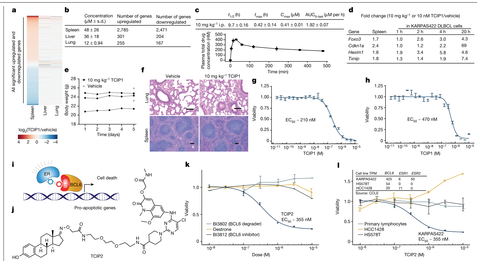
a, TCIP1以每天一次10 mg kg−1剂量腹腔注射 (i.p.) 连续给药5天后，在小鼠各主要脏器中诱发的组织特异性转录组改变热图。b, 小鼠肝脏、肺脏和脾脏中转录组差异基因数量的定量统计，以及第5天测得的组织累积药物浓度；n = 3只小鼠/组。c, TCIP1在小鼠体内的关键药代动力学 (PK) 参数：t1/2代表消除半衰期；tmax代表达到血清峰浓度的时间；Cmax代表血清最高药物浓度；AUC0-last代表从给药至最后测定时间点的血药浓度–时间曲线下面积。d, 在体外培养的DLBCL细胞 (KARPAS422) 与小鼠体内脾脏组织中，被TCIP1共同显著上调的关键靶基因表达倍数对比。e, 给药期间小鼠体重的动态监测折线图；在整个治疗周期内未见任何毒副反应或行为学异常。f, 溶剂对照组与TCIP1治疗组代表性小鼠肺脏与脾脏组织的苏木精–伊红 (H&E) 染色显微病理切片。比例尺：肺部图像为50 µm，脾脏图像为100 µm；a–f中各实验组与对照组均为n = 3只小鼠。g, TCIP1对人原代扁桃体正常淋巴细胞活力的影响曲线。h, TCIP1对人原代正常成纤维细胞活力的影响曲线。i, 旨在雌激素受体阳性、BCL6高表达DLBCL细胞中诱导细胞凋亡的ER–BCL6嵌合分子TCIP2的作用机制设计模式图。j, TCIP2的完整化学分子结构式。k, 在高表达ERβ（由ESR2基因编码）的KARPAS422细胞中，TCIP2与各单体对照分子（游离雌酮、BCL6 BTB抑制剂BI3812以及BCL6降解剂BI3802）对细胞活力影响的量效抑制对比。l, TCIP2在同时高表达ER和BCL6的DLBCL细胞 (KARPAS422) 中相较于原代正常人淋巴细胞、三阴性乳腺癌细胞系 (HS578T) 以及ER驱动但BCL6低表达乳腺癌细胞 (HCC1428) 的选择性细胞杀伤测定。CCLE代表癌细胞系百科全书数据库。对于g,h,k,l图，数据均为n = 3次独立生物学重复，以均值 ± s.d. 表示；g,h,k,l中的细胞活力检测均在加药处理72小时后进行。
a, Tissue-specific transcriptomic effects of TCIP1, treated at 10 mg kg−1 intraperitoneal (i.p.) once daily for 5 days. b, Quantification of transcriptome changes in the liver, lung and spleen and associated accumulated tissue concentrations of TCIP1. Treatment at 10 mg kg−1 TCIP1 intraperitoneal once daily, with measurement on day 5. n = 3 mice per treatment. c, Pharmacokinetic parameters of TCIP1. t1/2, half-life; tmax, time to max serum concentration; Cmax, maximum serum concentration; AUC0-last, area under the curve from dosing to last measured concentration. d, Comparison of key gene targets upregulated by TCIP1 in both cultured DLBCL cells (KARPAS422) and in the spleen. e, Body weight of treated mice. No adverse effects or behavioural abnormalities were noticed. f, Haematoxylin and eosin staining of the lung and spleen from representative mice treated with vehicle and drug. Scale bars, 50 µm (lung images) and 100 µm (spleen images). n = 3 mice each for treatment and vehicle for a–f. g, Effect of TCIP1 on cell viability of primary human tonsillar lymphocytes. h, Effect of TCIP1 on cell viability of primary human fibroblasts. i, ER–BCL6 TCIP2 designed to induce cell death in oestrogen-positive, BCL6-overexpressing DLBCLs. j, Chemical structure of TCIP2. k, Effect on cell viability of TCIP2 compared with controls: oestrone, BI3812 (a BCL6(BTB) inhibitor) and BI3802 (a BCL6 degrader) in KARPAS422 cells with high ERβ (encoded by ESR2) levels. l, Measurement of the selective effect on cell viability by TCIP2 in DLBCL cells with coincident overexpression of ER and BCL6 (KARPAS422) compared with primary human lymphocytes, a triple-negative breast cancer cell line (HS578T) and ER-driven but BCL6-low breast cancer cells (HCC1428). CCLE, Cancer Cell Line Encyclopedia. n = 3 biological replicates, mean ± s.d. for g,h,k,l. Viability curves in g,h,k,l are after 72 h of drug treatment.
Discussion
讨论 (Discussion)
Existing approaches to targeted cancer chemotherapy rely on inhibiting or degrading a protein or preventing its synthesis by RNAi or CRISPR (or CRISPRi). These approaches require complete or near complete removal of the driver function, often resulting in mechanism-based toxicity when the cancer driver is an essential protein. However, by making use of the intrinsic driving pathways of the cancer cell and rewiring them to activate pathways of cell death, we have introduced an approach to cancer chemotherapy that is analogous to a dominant, gain-of-function mutation in genetics. TCIPs produce their effect by activating cell death signalling and rewiring only a fraction of the cancer driver molecules per cell to drive the phenotype. This assertion is supported by the fact that 10 nM TCIP1 produces only an approximately 1.5-fold increase in BRD4 at BCL6 sites over the genome and less than 10% loss at enhancers (Fig. 4d,f), despite robust gene activation and cell killing. A gain-of-function mechanism would also explain the far more robust cell killing seen with substantially lower concentrations of TCIP1 than the weaker antiproliferative effects of conventional small-molecule inhibitors or degraders of BCL6 (refs. 23,57,58) or BET proteins24. The wealth of regulators of programmed cell death suggests many opportunities to use diverse cancer drivers to generalize this strategy of killing cancer cells by rewiring the cancer driver circuitry.
现存的恶性肿瘤靶向化疗策略几乎完全依赖于抑制某个蛋白质的功能、诱导其靶向降解，或是通过RNA干扰 (RNAi) 或CRISPR（或CRISPRi转录抑制）在源头上阻止其生物合成。这些传统的“功能缺失型 (loss-of-function)”策略普遍要求彻底或近乎彻底地消除目标致癌驱动蛋白的生物学功能；而当该致癌驱动蛋白在人体正常组织中同样扮演不可或缺的必需生理功能时，往往会导致严重的基于机制的靶向毒性 (mechanism-based toxicity)。然而，通过巧妙利用癌细胞自身固有的内源性致癌驱动信号通路，并将其重新布线以转而激活细胞死亡信号级联，我们开创了一种在遗传学逻辑上类似于“显性功能获得性突变 (dominant, gain-of-function mutation)”的全新肿瘤化疗范式。TCIP分子通过主动激活细胞死亡信号通路、且每个细胞仅需重新布线极小一部分致癌驱动分子，即可强力驱动终末杀伤表型。这一重要论断得到了如下实验事实的坚实支持：尽管引发了强烈的促死基因转录激活与高效的细胞杀伤，但10 nM极低浓度的TCIP1仅引起全基因组BCL6结合峰位点处BRD4约1.5倍的适度招募增加，同时活性增强子区域的BRD4占位损失甚至不足10% (Fig. 4d,f)。这种功能获得性新机制，也完美解释了为什么在显著低于传统药物的纳摩尔级超低浓度下，TCIP1所诱导的细胞杀灭效力远远强于传统BCL6小分子竞争性抑制剂或靶向降解剂（参考文献23,57,58）以及传统BET家族抑制剂24所产生的较弱抗增殖效应。真核生物中极其丰富的程序性细胞死亡调控因子网络，为我们利用多种多样的恶性肿瘤驱动因子来广泛推广这一“通过重构致癌驱动网络以杀灭癌细胞”的化疗新策略，提供了广阔而激动人心的探索空间。
Past studies have used CIPs of genetically modified transcription factors or epigenetic regulators to activate or repress signal transduction or transcription of exogenous or endogenous genes9,12,14. Small molecules that bind to DNA and/or nucleosomes have also been used for this purpose13,59. Although these studies were mechanistically informative and provided a catalogue of the biologic processes regulated by CIPs15, they had little therapeutic potential because of the need to introduce genetically modified transcription factors or small molecules with relatively little genomic specificity. Our experiments developing TCIPs rely only on endogenous transcription factors and epigenetic modifiers with their intrinsic biologic specificity and capture the combinatorial use of transcriptional regulators. The activation of endogenous genes by small-molecule TCIPs might have application to many other areas of biology and medicine. For example, TCIPs could be designed for use in activating death pathways in senescent cells, activating the expression of therapeutic or haploinsufficient genes, activating the expression of neoantigens in human immunotherapy, or regulating gene expression in cells or organisms for synthetic biology applications.
以往的经典研究曾利用经基因工程改造的转录因子或表观遗传调控蛋白的化学近距离诱导剂 (CIPs)，来人为激活或抑制外源性或内源性基因的信号转导及转录过程9,12,14。能够结合DNA骨架以及/或者核小体 (nucleosomes) 的合成小分子也曾被用于此类目的13,59。尽管这些先驱性研究在机制层面极富启发性，并系统编纂了一份受CIP调控的生物学过程目录15，但它们在临床转化医学上的应用潜力极为有限——因为它们必须在宿主细胞中预先转染引入外源基因工程修饰的融合蛋白，或者使用基因组序列特异性较差的合成小分子。与此形成鲜明对比的是：我们所开发的TCIP分子技术完全依赖于机体内源性表达的转录因子与表观遗传修饰酶，完美继承了它们固有的生物学序列特异性，并巧妙捕捉了真核生物转录调控因子的组合使用逻辑 (combinatorial use)。利用小分子TCIP激活内源性基因的全新概念，在现代生物学与转化医学的诸多其他前沿领域同样孕育着极其广泛的应用前景。例如：TCIP可被量身设计用于特异性激活衰老细胞 (senescent cells) 中的程序性自毁死亡通路（即新型衰老清除剂 Senolytics）；用于重新激活由于单倍体剂量不足 (haploinsufficiency) 导致表达减半的关键抑癌或治疗性基因；用于在肿瘤免疫治疗中强力激活隐藏的新抗原 (neoantigens) 转录呈现；或者在合成生物学 (synthetic biology) 应用中用于无损、精确调控活体细胞或复杂多细胞生物体内的目标基因表达网络。
Methods
研究方法 (Methods)
Lymphoma and leukaemia cells were cultured in RPMI-1640 (American Type Culture Collection (ATCC) 30-2001) + 10% FBS with antibiotics (100X PenStrep; 15140122, Gibco). Daudi cells were a gift from the laboratory of R. Levy (Stanford University) and originally from the ATCC. Raji cells were a gift from the laboratory of J. Cochran (Stanford University) and originally from the ATCC. Primary human tonsillar lymphocytes were a gift from M. M. Davis. Toldeo, K562, Reh and Pfeiffer cell lines were a gift from the laboratory of A. Alizadeh (Stanford University) and originally from the ATCC. KARPAS422 cells were obtained from Sigma (06101702). DOHH2 and OCILY19 were obtained from the DSMZ. All other cell lines (SUDHL5, HT, SUDHL10, DB, Jurkat and primary human fibroblasts) were obtained from the ATCC. Primary human fibroblasts were cultured in DMEM + 10% FBS with antibiotics and used at passages 3–5. Primary human tonsillar lymphocytes were a gift from M. M. Davis. Cells were routinely checked for mycoplasma and immediately checked upon suspicion. No cultures tested positive.
淋巴瘤和白血病细胞培养于含10%胎牛血清 (FBS) 及抗生素 (100×青霉素-链霉素双抗，PenStrep；15140122，Gibco) 的RPMI-1640培养基 (美国模式培养物保藏所 (ATCC) 30-2001) 中。Daudi细胞由R. Levy实验室 (斯坦福大学) 赠予，最初来源于ATCC。Raji细胞由J. Cochran实验室 (斯坦福大学) 赠予，最初来源于ATCC。原代人类扁桃体淋巴细胞 (Primary human tonsillar lymphocytes) 由M. M. Davis赠予。Toledo、K562、Reh和Pfeiffer细胞系由A. Alizadeh实验室 (斯坦福大学) 赠予，最初来源于ATCC。KARPAS422细胞购自Sigma (06101702)。DOHH2和OCILY19购自德国微生物菌种保藏中心 (DSMZ)。所有其他细胞系 (SUDHL5、HT、SUDHL10、DB、Jurkat以及原代人类成纤维细胞) 均购自ATCC。原代人类成纤维细胞培养于含10% FBS及抗生素的DMEM培养基中，并在第3至5代 (passages 3–5) 内使用。原代人类扁桃体淋巴细胞由M. M. Davis赠予。细胞定期进行支原体 (mycoplasma) 检测，并在出现怀疑迹象时立即复检。所有细胞培养物检测结果均为阴性。
Thirty thousand cells were plated in 100 µl media per well of a 96-well plate and treated with drug for indicated times and doses. A resazurin-based indicator of cell health (PrestoBlue; P50200, Thermo Fisher) was added for 1.5 h, after which the fluorescence ratio at 560/590 nm was recorded. The background fluorescence was subtracted and the signal was normalized to DMSO-treated cells. EC50 measurements on cell lines were done with four biological replicates by separate cell passages maintained by three independent investigators. Fit of dose–response curves to data and statistical analysis were performed using the drc package in R using the four-parameter log-logistic function.
将三万个细胞以每孔100 µl培养基接种于96孔板中，并按照指定的时间和药物浓度进行处理。加入基于刃天青 (resazurin) 的细胞健康指示剂 (PrestoBlue；P50200，Thermo Fisher) 孵育1.5小时，随后记录560/590 nm处的荧光比值。扣除背景荧光后，将测得信号针对二甲基亚砜 (DMSO) 对照处理的细胞进行归一化。在各细胞系上进行的半数最大效应浓度 (EC50) 测定均包含四个生物学重复 (four biological replicates)，分别由三位独立实验人员维护的不同代数细胞完成。使用R语言中的drc程序包，通过四参数对数-逻辑斯蒂函数 (four-parameter log-logistic function) 对数据进行剂量-反应曲线拟合和统计学分析。
The PRISM cell proliferation assay was carried out as previously described30. In brief, up to 906 barcoded cell lines in pools of 20–25 were thawed and plated into 384-well plates (1,250 cells per well for adherent cells, 2,000 cells per well for suspension or mixed suspension–adherent pools). Cells were treated with an eight-point dose curve starting at 10 µM with threefold dilutions in triplicate and incubated for 120 h, then lysed. The barcode for each cell was read out by mRNA-based Luminex detection as previously described60 and input to a standardized R pipeline (https://github.com/broadinstitute/prism_data_processing) to generate viability estimates relative to vehicle treatment and fit dose–response curves. The area under the dose–response curve (AUC), which is correlated with drug potency, was used as a metric of drug potency in a cell line, and correlated with BCL6 transcripts per million as annotated in the Cancer Cell Line Encyclopedia29.
PRISM细胞增殖测定如先前文献所述进行30。简而言之，将多达906种带有特定DNA条形码 (barcoded) 的细胞系以每池20–25种细胞的形式解冻，并接种于384孔板中 (贴壁细胞每孔1,250个细胞，悬浮细胞或混合悬浮-贴壁池每孔2,000个细胞)。细胞采用从10 µM起始、按3倍梯度稀释的8点浓度梯度曲线进行处理，一式三份 (triplicate)，孵育120小时后裂解细胞。每种细胞的条形码通过基于mRNA的Luminex液态芯片检测技术进行读出 (如先前文献60所述)，并输入标准化的R语言数据分析流程 (https://github.com/broadinstitute/prism_data_processing)，以生成相对于溶剂对照处理的细胞活力评估值并拟合剂量-反应曲线。剂量-反应曲线下面积 (AUC) 与药物效力高度相关，被用作衡量药物在该细胞系中效力的指标，并与癌症细胞系百科全书 (CCLE)29 中标注的BCL6每百万转录本数 (TPM) 进行相关性分析。
Additional details are provided in the Supplementary Methods.
额外实验细节详见补充方法 (Supplementary Methods)。
The construct for 6×His-TEV-BRD4(BD1) was described in Filippakopoulos, Qi et al.24 and was a gift from N. Burgess-Brown (Addgene plasmid #38943; http://n2t.net/addgene:38943; RRID: Addgene_38943). The construct for BCL6(BTB)-AviTag, where the AviTag was later biotinylated in vitro using purified BirA, was based on previously designed BCL6 constructs used for TR-FRET assays, as reported in multiple papers including refs. 23,61 and contains amnio acids 5–129 with three mutations—C8Q, C67R and C84N—that enhance stability but have no difference on backbone structure with the wild-type version62. A Trx-6×His-HRV3C-BCL6(BTB) construct without the AviTag was produced similarly for isothermal calorimetry (ITC) studies where the Trx-6xHis tag was cleaved by addition of HRV3C. Additional details are provided in the Supplementary Methods.
用于表达6×His-TEV-BRD4(BD1)的质粒构建体在Filippakopoulos、Qi等人24的文献中进行了描述，由N. Burgess-Brown赠予 (Addgene质粒编号#38943；http://n2t.net/addgene:38943；RRID: Addgene_38943)。用于表达BCL6(BTB)-AviTag (其AviTag序列随后在体外使用纯化的BirA生物素连接酶进行位点特异性生物素化) 的构建体基于先前设计的用于TR-FRET分析的BCL6载体 (见多篇报道包括参考文献23,61)，包含第5–129位氨基酸并带有三处点突变——C8Q、C67R和C84N；这三处突变能够显著增强蛋白质稳定性，但在骨架三维构象上与野生型完全一致62。无AviTag标签的Trx-6×His-HRV3C-BCL6(BTB)构建体以类似方式制备，用于等温滴定量热法 (ITC) 结合研究，其中硫氧还蛋白-6×组氨酸 (Trx-6×His) 融合标签通过加入HRV3C蛋白酶进行特异性酶切去除。额外实验细节详见补充方法 (Supplementary Methods)。
Each reaction contained 100 nM BRD4(BD1), 100 nM BCL6(BTB)-AviTag-Biot, 20 nM Streptavidin-FITC (SA1001, Thermo) and 1:400 anti-6×His terbium antibody (61HI2TLF, PerkinElmer) in 10 µl of buffer containing 20 mM HEPES, 150 mM NaCl, 0.1% BSA, 0.1% NP-40 and 1 mM TCEP in a 384-well plate. Protein was incubated with drug digitally dispensed (Tecan D300e) for 1 h in the dark at room temperature before excitation at 337 nm and measurement of emission at 520 nm (FITC) and 490 nm (terbium) with a PHERAstar FS plate reader (BMG Labtech). The ratio of signal at 520 nm to 490 nm was calculated and normalized to DMSO-treated conditions and plotted.
每个反应体系均包含100 nM BRD4(BD1)、100 nM BCL6(BTB)-AviTag-Biot、20 nM 链霉亲和素-异硫氰酸荧光素 (Streptavidin-FITC；SA1001，Thermo) 以及1:400稀释的抗6×组氨酸铽标记抗体 (anti-6×His terbium antibody；61HI2TLF，PerkinElmer)，配制于384孔板中的10 µl反应缓冲液内 (含20 mM HEPES、150 mM NaCl、0.1% 牛血清白蛋白 (BSA)、0.1% NP-40和1 mM TCEP还原剂)。蛋白质与通过数字配液仪 (Tecan D300e) 精确分配的化合物在室温避光条件下孵育1小时，随后使用PHERAstar FS酶标仪 (BMG Labtech) 在337 nm波长激发，并测定520 nm (FITC受体荧光) 和490 nm (铽供体荧光) 处的发射光强度。计算520 nm与490 nm处的信号比值 (520/490比值)，并相对于二甲基亚砜 (DMSO) 处理对照进行归一化后绘制曲线。
The tag-cleaved versions of BCL6(BTB) and BRD4(BD1) were used for experiments, in a VP-ITC machine. For binary assays with TCIP1, 400 µM BCL6(BTB) or BRD4(BD1) were titrated from the syringe into a cell containing 40 µM TCIP1. For the binary protein–protein ITC, 330 µM BCL6(BTB) was titrated into 68 µM BRD4(BD1). For binary assays with JQ1 or BI3812, 100 µM BCL6(BTB) or BRD4(BD1) was titrated into 10 µM drug. For ternary ITC experiments, a 1:1 mixture of 40 µM TCIP1 and 40 µM BRD4(BD1) were in the cell, and 400 µM BCL6(BTB) was titrated from the syringe. In all experiments, proteins and drugs were in the same buffer of 20 mM HEPES, 150 mM NaCl, 0.5 mM TCEP, pH 7.4. All proteins and drug solutions had 0.2% DMSO matched between cell and syringe. The titrations were performed with 28 injections of 10 µl each at 25 °C with 240 s between injections, and the first injection of 2 µl was discarded. The data were analysed using Origin 7.0 (MicroCal) with a single-site binding model. The data for TCIP1 binary and ternary titrations were fitted with a competition model using MicroCal LLC Origin software.
在VP-ITC微量热仪中，使用去除融合标签版本的BCL6(BTB)和BRD4(BD1)蛋白进行热力学实验。对于TCIP1的二元结合测定，将400 µM的BCL6(BTB)或BRD4(BD1)从注射针滴定至装有40 µM TCIP1的样品池中。对于二元蛋白–蛋白结合ITC，将330 µM BCL6(BTB)滴定至68 µM BRD4(BD1)中。对于JQ1或BI3812的二元结合实验，将100 µM BCL6(BTB)或BRD4(BD1)滴定至10 µM化合物中。对于三元复合物ITC实验，样品池中装有40 µM TCIP1与40 µM BRD4(BD1)的1:1混合液，从注射针滴定400 µM BCL6(BTB)。在所有实验中，蛋白质与药物均处于相同的缓冲体系中 (20 mM HEPES、150 mM NaCl、0.5 mM TCEP，pH 7.4)。所有蛋白质和药物溶液在样品池与注射针之间均严格匹配含0.2% DMSO。滴定在25 °C下进行，共进行28次注射，每次10 µl，两次注射间隔240秒，第一针2 µl的数据予以舍弃。使用Origin 7.0 (MicroCal) 软件采用单点结合模型 (single-site binding model) 分析数据。TCIP1的二元和三元滴定数据使用MicroCal LLC Origin软件的竞争结合模型 (competition model) 进行拟合。
The tag-cleaved version of BRD4(BD1) and biotinylated BCL6(BTB)-AviTag were used for experiments, in a Gator Bio BLI machine. All experiments were performed in a buffer of 20 mM HEPES, 150 mM NaCl, 0.5 mM TCEP, 0.1% BSA, 0.05% Tween-20, pH 7.4 at 25 °C with 1,000 r.p.m. shaking. For binary assays, 5 µg ml−1 biotinylated BCL6(BTB)-AviTag was loaded on Gator Streptavidin Probes (160009, Gator Bio) to a shift of ~1.2 nm. After establishing a stable baseline, association was measured with a seven-point twofold dilution series of TCIP1 or BI3812 starting at 10 µM, followed by dissociation into buffer without drug. For ternary kinetic assays, 5 µg ml−1 biotinylated BCL6(BTB)-AviTag was loaded onto Gator Streptavidin Probes to a shift of ~1.2 nm, and association was measured with a seven-point threefold dilution series of TCIP1 in the presence of 10 µM BRD4(BD1) (a concentration where >90% of TCIP1 was bound to BRD4(BD1)), followed by dissociation into buffer containing 10 µM BRD4(BD1) devoid of drug.
去除融合标签版本的BRD4(BD1)与生物素化的BCL6(BTB)-AviTag用于结合动力学实验，在Gator Bio生物膜干涉仪中进行。所有实验均在含20 mM HEPES、150 mM NaCl、0.5 mM TCEP、0.1% BSA、0.05% Tween-20，pH 7.4的缓冲液中于25 °C及1,000 rpm振荡条件下进行。对于二元相互作用测定，将5 µg ml−1生物素化BCL6(BTB)-AviTag固载于Gator链霉亲和素生物传感器探针 (160009，Gator Bio) 上至信号位移达到约1.2 nm。在建立稳定基线后，使用以10 µM起始、按2倍梯度稀释的7点TCIP1或BI3812浓度梯度测定结合缔合相 (association)，随后在无药物的纯缓冲液中测定解离相 (dissociation)。对于三元复合物动力学测定，同样将5 µg ml−1生物素化BCL6(BTB)-AviTag固载至探针 (位移约1.2 nm)，并在过量10 µM BRD4(BD1) 存在下 (在该浓度下超过90%的TCIP1均已预结合于BRD4(BD1))，使用按3倍梯度稀释的7点TCIP1浓度梯度测定结合相，随后解离至含有10 µM BRD4(BD1) 但不含任何药物的缓冲液中。
For annexin V assays, 500,000 cells plated at 1 M ml−1 and treated with drug for indicated timepoints and doses were harvested, washed in PBS and resuspended in 100 µl 1X annexin V binding buffer (556454, BD Biosciences) with 5 µl annexin V-FITC (556419, BD Biosciences) and 5 µl propidium iodide (556463, BD Biosciences) or 7-AAD (559925, BD Biosciences) for 15 min at room temperature in the dark. Cells were diluted with 400 µl annexin V binding buffer and analyzed on a BD Accuri C6 or CytoFLEX flow cytometer. For simultaneous cell cycle and TUNEL assays, the APO-BrdU TUNEL Assay Kit (A23210, Invitrogen) was used. Two million cells were plated at 1 M ml−1, treated with drug, harvested and fixed in 1% paraformaldehyde in PBS on ice for 15 min, washed twice with PBS, and fixed in 70% ethanol at −20 °C overnight. Fixed and permeabilized cells were washed and labelled with BrdUTP using terminal deoxynucleotidyl transferase (TdT) for 60 min at 37 °C, washed and stained with Alexa Fluor 488-conjugated anti-BrdU antibody for 30 min at room temperature. Cells were counterstained with propidium iodide/RNase A solution and analyzed by flow cytometry. Cell cycle phase gates were set on the basis of DNA content (propidium iodide/7-AAD) and BrdU incorporation (pulse labelling with 10 µM EdU or BrdU for 1 h before harvest), and apoptosis was quantified within each cell cycle phase. Flow cytometry data were analyzed using FlowJo software (v10). Gating strategies are provided in Supplementary Fig. 2. Equal cell numbers were recorded across conditions.
对于膜联蛋白V (annexin V) 凋亡检测，将以1×10^6 cells ml−1接种并经指定时间与浓度药物处理的500,000个细胞收集，用PBS洗涤后重悬于100 µl 1×膜联蛋白V结合缓冲液 (556454，BD Biosciences) 中，加入5 µl annexin V-FITC (556419，BD Biosciences) 以及5 µl碘化丙啶 (PI；556463，BD Biosciences) 或7-AAD (559925，BD Biosciences)，在室温避光孵育15分钟。随后加入400 µl结合缓冲液稀释，在BD Accuri C6或CytoFLEX流式细胞仪上进行上机分析。对于细胞周期与TUNEL双重同步测定，使用APO-BrdU TUNEL检测分析试剂盒 (A23210，Invitrogen)。将以1×10^6 cells ml−1接种的两百万个细胞经药物处理后收集，在冰上用含1%多聚甲醛 (PFA) 的PBS溶液固定15分钟，用PBS洗涤两次，再置于−20 °C的70%乙醇中过夜固定透化。洗涤固定透化后的细胞，使用末端脱氧核苷酸转移酶 (TdT) 在37 °C下以BrdUTP标记DNA断裂断端60分钟，洗涤后在室温下使用Alexa Fluor 488偶联的抗BrdU抗体染色30分钟。使用碘化丙啶/RNase A溶液复染细胞核DNA，并通过流式细胞术进行检测分析。细胞周期各时相门 (gates) 根据DNA含量 (PI/7-AAD) 与BrdU掺入量 (收获前用10 µM EdU或BrdU脉冲标记1小时) 进行严格界定，并在每个细胞周期特定时相内分别定量细胞凋亡比例。流式数据使用FlowJo软件 (v10) 进行深度分析。设门策略详见补充图2 (Supplementary Fig. 2)。各实验条件间均采集记录等量的细胞总数。
KARPAS422 cells were lentivirally transduced with a construct containing the reporter. After selection, cells were plated at 1 M ml−1 and treated with drug for indicated times and doses. After 24 h of treatment, cells were harvested and luciferase activity was measured using the Dual-Luciferase Reporter Assay System (E1910, Promega) according to the manufacturer’s instructions on a GloMax Discover Microplate Reader (Promega). Firefly luciferase signal was normalized to Renilla luciferase signal to control for transfection efficiency and cell viability, and further normalized to cells treated with DMSO.
使用包含报告基因的慢病毒构建体转导KARPAS422细胞。抗性筛选完成后，将细胞以1×10^6 cells ml−1接种，并用指定时间和剂量的药物进行处理。处理24小时后，收集细胞，按照生产商操作指南使用双荧光素酶报告基因检测系统 (Dual-Luciferase Reporter Assay System；E1910，Promega) 在GloMax Discover微孔板读数仪 (Promega) 上测定荧光素酶活性。将萤火虫荧光素酶 (Firefly luciferase) 信号针对海肾荧光素酶 (Renilla luciferase) 信号进行归一化，以校正转导效率和细胞存活率的差异，并进一步针对DMSO对照处理的细胞进行归一化。
HEK293T cells were transfected with 1 µg of a construct with an N-terminal fusion of HaloTag to full-length BCL6 and 1 µg of a construct with an N-terminal fusion of NanoLuc to full-length BRD4 in a 6-well plate using Lipofectamine 2000 (11668019, Thermo). After 24 h, cells were re-plated in 96-well plates at 20,000 cells per well in the presence of 100 nM HaloTag NanoBRET 618 ligand (Promega) or DMSO control. Drug was added at indicated concentrations and incubated for 4 h. NanoBRET Nano-Glo Substrate (Promega) was added and donor emission (460 nm) and acceptor emission (618 nm) were measured on a GloMax Discover Microplate Reader (Promega). The raw BRET ratio was calculated as (emission 618 nm / emission 460 nm) and background BRET ratio from cells without HaloTag ligand was subtracted. Corrected BRET ratio was plotted against drug concentration to determine cellular ternary complex formation induced by the bivalent molecule.
在6孔板中使用Lipofectamine 2000 (11668019，Thermo) 向HEK293T细胞中共转染1 µg N端融合HaloTag的全长BCL6质粒和1 µg N端融合NanoLuc荧光素酶的全长BRD4质粒。转染24小时后，将细胞以每孔20,000个细胞的密度重新接种至96孔板中，并加入100 nM HaloTag NanoBRET 618特异性荧光配体 (Promega) 或DMSO溶剂对照。加入指定浓度的药物孵育4小时。加入NanoBRET Nano-Glo生物发光底物 (Promega)，使用GloMax Discover微孔板读数仪 (Promega) 测定供体发射光 (460 nm) 和受体发射光 (618 nm)。原始BRET比值按 (618 nm发射光 / 460 nm发射光) 进行计算，并扣除未添加HaloTag配体细胞的背景BRET比值。将校正后的BRET比值对药物浓度作图，以精确测定由双价分子在活细胞内诱导形成的三元复合物水平。
Cells were plated at 1 M ml−1 and harvested in TRIsure (38033, Bioline). RNA was extracted using Direct-zol RNA MicroPrep (R2062, Zymo Research) including in-column DNase I digestion according to the manufacturer’s protocol. Reverse transcription was done using the High-Capacity RNA-to-cDNA Kit (4387406, Thermo Fisher). Real-time PCR was performed on a QuantStudio 6 Flex system (Applied Biosystems) using PowerUp SYBR Green Master Mix (A25742, Thermo Fisher). Relative mRNA expression was calculated using the ΔΔCt method normalized to ACTB or GAPDH. For RNA-seq, RNA integrity was verified using the Agilent 2100 Bioanalyzer. Libraries were prepared using the NEBNext Ultra II Directional RNA Library Prep Kit for Illumina (E7760, NEB) and sequenced on an Illumina NovaSeq (Novogene).
细胞以1×10^6 cells ml−1密度接种，并收获于TRIsure裂解液 (38033，Bioline) 中。按照生产商推荐方案，使用Direct-zol RNA微量提取试剂盒 (Direct-zol RNA MicroPrep；R2062，Zymo Research) 进行总RNA提取，并在离心柱上进行DNase I消化以彻底去除基因组DNA污染。使用高容量RNA反转录试剂盒 (High-Capacity RNA-to-cDNA Kit；4387406，Thermo Fisher) 进行反转录合成cDNA。在QuantStudio 6 Flex实时荧光定量PCR仪 (Applied Biosystems) 上使用PowerUp SYBR Green预混液 (A25742，Thermo Fisher) 进行实时qPCR检测。采用ΔΔCt相对定量法计算靶基因mRNA的相对表达量，并以内参基因ACTB或GAPDH进行标准化。对于RNA测序 (RNA-seq)，使用Agilent 2100生物分析仪评估RNA完整性 (RIN值)。使用NEBNext Ultra II定向RNA文库制备试剂盒 (NEBNext Ultra II Directional RNA Library Prep Kit for Illumina；E7760，NEB) 构建链特异性转录组文库，并在Illumina NovaSeq平台 (诺禾致源，Novogene) 上进行高通量测序。
Cells were plated at 1 M ml−1 and treated with drug at indicated timepoints and doses. Two million cells were harvested and lysed in RIPA lysis buffer (89900, Thermo Fisher) supplemented with 1X protease inhibitor cocktail (11836170001, Roche) and 1X phosphatase inhibitor cocktail (4906845001, Roche) for 30 min on ice. Lysates were centrifuged at 16,000g for 15 min at 4 °C and protein concentrations were determined by BCA protein assay (23225, Thermo Fisher). Equal amounts of protein (20–40 µg) were resolved by SDS–PAGE and transferred to nitrocellulose membranes. Membranes were blocked in 5% non-fat dry milk in TBST and incubated overnight at 4 °C with primary antibodies: anti-BCL6 (1:1,000; D4I2V, Cell Signaling Technology), anti-BRD4 (1:1,000; E2A7X, Cell Signaling Technology), anti-p53 (1:1,000; 1C12, Cell Signaling Technology), anti-BCL2 (1:1,000; D5C9, Cell Signaling Technology), and anti-GAPDH (1:5,000; 14C10, Cell Signaling Technology). After washing with TBST, membranes were incubated with HRP-conjugated secondary antibodies (1:5,000; Cell Signaling Technology) for 1 h at room temperature. Chemiluminescent signals were developed with SuperSignal West Pico PLUS or Femto substrate (Thermo Fisher) and imaged using a ChemiDoc MP Imaging System (Bio-Rad). Uncropped blots are provided in Supplementary Fig. 1.
细胞以1×10^6 cells ml−1密度接种，并在指定的时间点和药物浓度下进行处理。收集两百万个细胞，加入添加了1×完全蛋白酶抑制剂混合物 (11836170001，Roche) 和1×磷酸酶抑制剂混合物 (4906845001，Roche) 的RIPA裂解缓冲液 (89900，Thermo Fisher) 在冰上裂解30分钟。裂解液在4 °C下以16,000g离心15分钟，使用BCA蛋白质定量试剂盒 (23225，Thermo Fisher) 测定上清蛋白浓度。取等量总蛋白 (20–40 µg) 进行十二烷基硫酸钠-聚丙烯酰胺凝胶电泳 (SDS-PAGE) 分离，并转印至硝酸纤维素膜上。用含5%脱脂奶粉的TBST室温封闭印迹膜，随后在4 °C下与一抗孵育过夜：抗BCL6兔单抗 (1:1,000；D4I2V，Cell Signaling Technology)、抗BRD4兔单抗 (1:1,000；E2A7X，Cell Signaling Technology)、抗p53小鼠单抗 (1:1,000；1C12，Cell Signaling Technology)、抗BCL2兔单抗 (1:1,000；D5C9，Cell Signaling Technology) 以及抗GAPDH兔单抗 (1:5,000；14C10，Cell Signaling Technology)。TBST洗涤后，与辣根过氧化物酶 (HRP) 偶联的二抗 (1:5,000；Cell Signaling Technology) 在室温下孵育1小时。使用SuperSignal West Pico PLUS或Femto超敏化学发光底物 (Thermo Fisher) 显色，并使用ChemiDoc MP全功能成像系统 (Bio-Rad) 记录印迹图像。完整未经裁剪的原始印迹胶图详见补充图1 (Supplementary Fig. 1)。
Raw reads were checked for quality using fastqc (https://www.bioinformatics.babraham.ac.uk/projects/fastqc/) and trimmed of adapter sequences using cutadapt63. Trimmed reads were aligned to the human reference genome (GRCh38) and quantified using kallisto64. Differential gene expression analysis was performed using DESeq2 (ref. 65). Wald test was used for hypothesis testing, and the apeglm method66 was used for effect size shrinkage. P-values were adjusted for multiple testing using the Benjamini–Hochberg procedure (padj). Genes with padj ≤ 0.05 and |log2 fold change| ≥ 0.5 (or ≥ 1.0 where indicated) were considered significantly differentially expressed. Gene set enrichment analysis was performed using Enrichr67 and the Molecular Signatures Database (MSigDB) Hallmark Gene Sets. Principal component analysis was performed on variance stabilizing transformed (VST) normalized counts.
使用fastqc软件 (https://www.bioinformatics.babraham.ac.uk/projects/fastqc/) 对测序原始下机数据 (raw reads) 进行质量评估质控，并使用cutadapt软件63去除测序接头序列。过滤后的高质量reads通过kallisto算法64对齐至人类参考基因组 (GRCh38) 并进行转录本表达水平定量。使用DESeq2程序包65进行差异表达基因 (DEG) 分析。采用Wald检验进行统计学假设检验，并使用apeglm自适应收缩算法66进行效应值 (log2倍数变化) 收缩估计。通过Benjamini–Hochberg方法对P值进行多重假设检验校正得到校正P值 (padj)。校正P值padj ≤ 0.05且|log2倍数变化| ≥ 0.5 (或在特定分析中≥ 1.0) 的基因被判定为显著差异表达基因。使用Enrichr平台67以及分子特征数据库 (MSigDB) 中的Hallmark特征基因集开展生物学通路富集分析。基于方差齐性变换 (VST) 归一化表达计数值进行主成分分析 (PCA)。
Thirty million cells were treated with TCIP1 or DMSO for indicated timepoints. Cells were washed in PBS and crosslinked with 1% formaldehyde in PBS for 10 min at room temperature with gentle shaking, followed by quenching with 125 mM glycine for 5 min. Cells were washed twice with ice-cold PBS containing 1X protease inhibitor cocktail and stored at −80 °C. Chromatin was prepared by cell lysis in Farnham lysis buffer followed by nuclei lysis in RIPA shearing buffer. Chromatin was sonicated to an average fragment size of 200–500 bp using a Covaris E220 focused-ultrasonicator. For spike-in normalization, Drosophila melanogaster chromatin (Active Motif, 53083) and spike-in antibody (Active Motif, 61686) were added to each ChIP reaction. Antibodies used for ChIP were: anti-BRD4 (A301-985A, Bethyl Laboratories; 5 µg per ChIP), anti-H3K27ac (ab4729, Abcam; 5 µg per ChIP), anti-RNA Pol II Ser2 phospho (04-1571, Millipore; 5 µg per ChIP), and anti-RNA Pol II Ser5 phospho (04-1572, Millipore; 5 µg per ChIP). Antibody-chromatin complexes were captured with protein A/G magnetic beads (Dynabeads, Thermo Fisher) overnight at 4 °C. Beads were washed extensively with low-salt, high-salt, LiCl and TE buffers, and chromatin was eluted in elution buffer (1% SDS, 100 mM NaHCO3). Crosslinks were reversed by overnight incubation at 65 °C with proteinase K and RNase A. DNA was purified using the MinElute PCR Purification Kit (Qiagen). ChIP-seq libraries were prepared using the NEBNext Ultra II DNA Library Prep Kit for Illumina (E7645, NEB) and sequenced on an Illumina NovaSeq (Novogene).
将三千万个细胞用TCIP1或DMSO对照处理指定的时间。细胞用PBS洗涤，随后在室温下用含1%甲醛的PBS溶液温和振荡交联10分钟，加入终浓度为125 mM的甘氨酸终止交联5分钟。用含1×完全蛋白酶抑制剂的冰预冷PBS洗涤细胞两次，并冻存于−80 °C备用。通过Farnham裂解缓冲液裂解细胞释放细胞核，再用RIPA超声剪切缓冲液裂解细胞核制备染色质样品。使用Covaris E220聚焦超声波破碎仪将染色质打断至平均片段大小为200–500 bp。为了进行高精度的外源内参归一化 (spike-in normalization)，向每个ChIP反应体系中严格加入固定比例的黑腹果蝇 (Drosophila melanogaster) 染色质 (Active Motif，53083) 以及配套的果蝇外源抗体 (Active Motif，61686)。用于染色质免疫沉淀的抗体包括：抗BRD4抗体 (A301-985A，Bethyl Laboratories；每个ChIP反应用5 µg)、抗H3K27ac抗体 (ab4729，Abcam；每个ChIP用5 µg)、抗RNA聚合酶II Ser2磷酸化抗体 (04-1571，Millipore；每个ChIP用5 µg) 以及抗RNA聚合酶II Ser5磷酸化抗体 (04-1572，Millipore；每个ChIP用5 µg)。抗体-染色质复合物在4 °C下使用蛋白A/G磁珠 (Dynabeads，Thermo Fisher) 结合过夜捕获。磁珠依次使用低盐缓冲液、高盐缓冲液、氯化锂缓冲液和TE缓冲液进行充分严谨洗涤，随后在洗脱缓冲液 (1% SDS、100 mM NaHCO3) 中洗脱染色质。在65 °C下加入蛋白酶K和RNase A孵育过夜进行脱交联。使用MinElute PCR纯化试剂盒 (Qiagen) 纯化回收沉淀的DNA片段。ChIP-seq测序文库使用NEBNext Ultra II DNA文库制备试剂盒 (NEBNext Ultra II DNA Library Prep Kit for Illumina；E7645，NEB) 进行构建，并在Illumina NovaSeq测序平台上进行深度测序 (诺禾致源)。
The data quality was checked using fastqc. The raw reads were trimmed from adapters with trim_galore (parameters: --paired --fastqc --clip_R1 3 --clip_R2 3 --three_prime_clip_R1 3 --three_prime_clip_R2 3). The trimmed reads were aligned to the human reference genome (GRCh38) and to the Drosophila melanogaster reference genome (dm6) using bowtie2 (parameters: --local --very-sensitive-local --no-unal --no-mixed --no-discordant --phred33 -I 10 -X 700). Samtools was used to filter low quality alignments and remove duplicate reads (samtools view -q 20; samtools markdup -r). Peaks were called using MACS2 (ref. 68) with a p-value threshold of 1e-5. For spike-in normalization, uniquely mapped reads in each human ChIP library were scaled according to the total number of uniquely mapped Drosophila reads in that sample. Specifically, mapped unique reads in each ChIP were downsampled proportional to a normalization factor calculated by: (1) counting the unique reads in each sample that align to the fly genome; (2) identifying the sample containing the least amount of mapped fly genome reads; and (3) computing the normalization factor for each sample as (reads mapping to the fly genome in the sample with minimum mapped fly reads)/(reads mapping to the fly genome in the current sample). This procedure was carried out on a per-antigen basis (that is, the H3K27ac ChIPs were treated separately from the Pol II Ser2 phos ChIPs, which were separate from the Poll II Ser5 phos ChIPs). The average percentage of reads in each sample that mapped to the fly genome was 1.8 ± 1.4% (mean ± s.d.). All browser tracks and metaprofiles shown were calculated with spike-in-normalized and input-subtracted data. The peak differential analysis and principal component analysis was performed using DESeq2 (ref. 65). The SRX4609168 public dataset was used to extract positions of BCL6 summits for Fig. 4d. Enhancers and super-enhancers used in Fig. 4f and Extended Data Fig. 8d,e were classified using the ROSE49 algorithm by stitching together H3K27ac peaks in untreated cells within 12.5 kb but excluding regions within 2 kb of a transcription start site unless within a larger H3K27ac domain. Data from Bal et al.73 were used to cross-check our analysis and annotate the BCL6 intronic hyper-mutated super-enhancer.
数据质量使用fastqc进行全面质控。原始reads使用trim_galore工具去除测序接头并进行端部修剪 (修剪参数：--paired --fastqc --clip_R1 3 --clip_R2 3 --three_prime_clip_R1 3 --three_prime_clip_R2 3)。修剪后的reads分别使用bowtie2对齐比对至人类参考基因组 (GRCh38) 和黑腹果蝇参考基因组 (dm6) (比对参数：--local --very-sensitive-local --no-unal --no-mixed --no-discordant --phred33 -I 10 -X 700)。使用Samtools过滤低质量比对序列并移除PCR重复reads (执行命令：samtools view -q 20；samtools markdup -r)。使用MACS2软件68进行富集峰识别 (peak calling)，设定显著性P值阈值为1×10^-5。对于外源内参归一化 (spike-in normalization)，每个样本中对齐至人类基因组的唯一定位reads均根据该样本中唯一定位至果蝇基因组的reads总数进行比例缩放。具体而言，每个ChIP文库中的唯一定位reads均按照以下步骤计算出的归一化因子进行按比例降采样 (downsampling)：(1) 统计每个样本中唯一定位至果蝇基因组的reads总数；(2) 找出所有样本中比对至果蝇基因组reads最少的那个基准样本；(3) 计算各样本的归一化因子＝(基准样本中定位至果蝇基因组的reads数) / (当前样本中定位至果蝇基因组的reads数)。该校正流程在各抗原类别内独立执行 (即H3K27ac的ChIP、Pol II Ser2磷酸化ChIP与Pol II Ser5磷酸化ChIP彼此独立标准化)。每个样本中对齐至果蝇基因组的平均reads比例为1.8 ± 1.4% (均值 ± 标准差)。文章中展示的所有基因组浏览器轨迹图 (browser tracks) 和平均信号分布图 (metaprofiles) 均使用经果蝇外源内参归一化并扣除Input对照背景的数据计算得出。峰差异分析与主成分分析 (PCA) 使用DESeq2程序包65完成。公共数据集SRX4609168用于提取Fig. 4d中的BCL6结合峰顶峰 (summits) 坐标。Fig. 4f和Extended Data Fig. 8d,e中使用的常规增强子与超级增强子分类采用ROSE算法49进行界定，该算法通过将未处理细胞中距离在12.5 kb以内的H3K27ac富集峰拼接缝合 (stitch)，但排除距离转录起始位点 (TSS) 2 kb以内的启动子区域 (除非该启动子位于更大的H3K27ac连续结构域内)。来自Bal等人73的研究数据用于交叉复核我们的表观基因组分析并精确注释BCL6内含子区高频超突变超级增强子。
The pharmacokinetic and tolerability study was performed in the Drug Metabolism and Pharmacokinetics (DMPK) Core facility at Scripps Florida (https://www.scripps.edu/science-and-medicine/cores-and-services/dmpk-core/index.html). Mice used were C57Bl/6J, male and 9 weeks old. Sex was not considered in the study design, no data were randomized and no experimenters were blinded. The mice were housed in individually ventilated cages in JAG 75 cages with micro-isolator lids. HEPA-filtered air was supplied into each cage at a rate of 60 air exchanges per hour for the mice. The dark–light cycle was set to 20:00 on and 20:00 off. The temperature was set at 72 °F and was maintained at ±2 °F. The humidity was low/Hi of 30–70%. There was a computerized system in place to control and or monitor the temperatures within the Animal Holding Room. Each animal room was equipped with a thermos-hygrometer that was monitored and recorded daily on the room log. Of TCIP1, 10 mg kg−1 was injected intraperitoneally into C57BL/6 male mice (n = 3 in treatment and n = 3 in vehicle conditions) using a 25–29-gauge needle to deliver 10 µl g−1 body weight of a formulation of 1 mg ml−1 TCIP1 in 5% DMSO, 5% Tween-80, and 90% saline. Vehicle was the same formulation (5%, 5% and 90% of DMSO, Tween-80 and saline, respectively). The formulation was checked to be a clear solution and after administration, the animal was put back in its cage. For pharmacokinetic properties, plasma levels were measured at 0, 5, 15, 30, 60, 120, 240, 360 and 480 min after drug administration. For tolerability work, body weights and observation of animal health were recorded each day through 5 days of dosing once daily. After 5 days, tissues were collected 8 h after the last drug administration and split into one part for RNA sequencing, homogenized in TRIzol (15596026, Thermo), another part for histology, snap-frozen, and another part for measurement of drug levels for which molar concentrations were recorded with the assumption of 1 g tissue was equal to 1 ml. Samples were processed for analysis by precipitation using acetonitrile and analysed with liquid chromatography–tandem mass spectrometry. Pharmacokinetic parameters were calculated using the noncompartmental analysis tool of WinNonlin Enterprise software (version 6.3). All procedures were approved by the Scripps Florida Institutional Animal Care and Use Committee, and the Scripps Vivarium is fully accredited by the Association for Assessment and Accreditation of Laboratory Animal Care International. Formalin-fixed paraffin-embedded blocks (on snap-frozen tissue) and haematoxylin and eosin staining were done by the Stanford Histology/Pathology Service Core by H.V. and P. Chu.
药代动力学与耐受性研究在斯克利普斯研究所佛罗里达分所 (Scripps Florida) 的药物代谢与药代动力学 (DMPK) 核心设施完成 (https://www.scripps.edu/science-and-medicine/cores-and-services/dmpk-core/index.html)。所用实验动物为9周龄雄性C57Bl/6J小鼠。研究设计中未将性别纳入考量变量，数据未采用随机分组，实验人员未采用盲法。小鼠饲养于带有微隔离盖的JAG 75独立通风笼具 (IVC) 中。以每小时60次换气率向每个小鼠笼具输送经HEPA高效空气过滤器过滤的洁净空气。昼夜光照周期设定为20:00亮灯/20:00熄灯。饲养温度设定为72 °F，维持在±2 °F波动范围内。相对湿度控制在30–70%的正常区间。动物饲养室内配备计算机集中控制与监测温度系统。每个动物房均装有温湿度计，并在房间运行日志中每日监测记录。通过腹腔注射 (intraperitoneally) 向C57BL/6雄性小鼠 (给药治疗组n = 3，溶剂对照组n = 3) 注射10 mg kg−1剂量的TCIP1，使用25–29号注射针按照每克体重10 µl给药体积递送配方 (含1 mg ml−1 TCIP1，溶于5% DMSO、5% Tween-80和90%生理盐水)。溶剂对照组采用完全相同配方的载体溶液 (分别含5%、5%和90%的DMSO、Tween-80与生理盐水)。确认配制药液为澄清均一透明溶液，给药后将动物放回笼盒。对于药代动力学 (PK) 特性评估，分别在给药后0、5、15、30、60、120、240、360和480分钟采血测定血浆药物浓度。对于耐受性评估，在连续5天每日一次给药期间，每日记录小鼠体重并严密观察动物健康表征。给药5天后，在最后一次给药后8小时取材处死小鼠收集主要器官组织：一份置于TRIzol裂解液 (15596026，Thermo) 中匀浆用于转录组RNA测序；一份迅速液氮速冻用于病理组织学检查；另一份用于组织药物浓度测定 (按1克组织等于1毫升体积假设记录摩尔药物浓度)。样品通过乙腈沉淀蛋白处理后，采用液相色谱-串联质谱联用仪 (LC-MS/MS) 进行定量分析。药代动力学参数使用WinNonlin Enterprise商业软件 (版本6.3) 中的非房室分析 (NCA) 工具计算得出。所有动物实验操作流程均获得斯克利普斯佛罗里达实验动物伦理委员会 (IACUC) 审查批准，且斯克利普斯动物饲育中心获得国际实验动物评估与认可委员会 (AAALAC) 的完全认证。组织标本的福尔马林固定石蜡包埋 (FFPE) 组织块制作与苏木精-伊红 (H&E) 染色由斯坦福组织学/病理学服务核心平台的H.V.与P. Chu教授团队完成。
Further information on research design is available in the Nature Portfolio Reporting Summary linked to this article.
关于本研究设计的更多详细信息，可参见本文关联的《自然投资组合报告总结》(Nature Portfolio Reporting Summary)。
Uncropped blots of western blots and Coomassie gels of recombinant proteins are available in Supplementary Fig. 1a,b, respectively. The flow gating strategy is available in Supplementary Fig. 2. Select gene expression changes in tissue from mice treated with TCIP1 are annotated in Supplementary Table 1. Source data for mouse drug levels in plasma and tissue and for body weight changes are provided. Sequencing data have been deposited to GSE211282. Source data are provided with this paper.
Extended Data Figures and Tables
扩展数据图表与详细图解 (Extended Data Figures)
Extended Data Fig. 1 | Potency of TCIP1 in cancer cell lines and correlation with BCL6 level.
扩展数据图 1 | TCIP1在各类癌细胞系中的杀伤效力及其与BCL6表达水平的负相关性
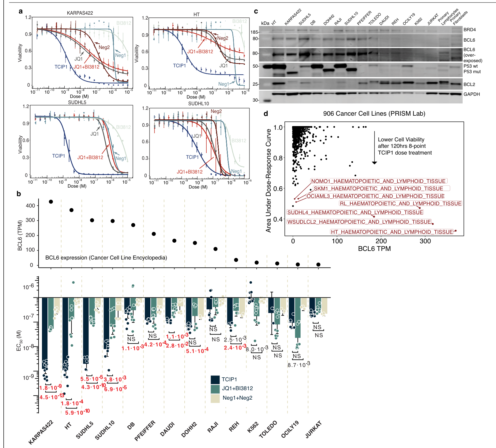
a. TCIP1对细胞活力的抑制效应与阴性对照分子Neg1和Neg2、单侧抑制剂分子JQ1和BI3812、或JQ1+BI3812联合用药相加效应的定量对比。数值以均值 ± 标准差 (mean ± s.d.) 表示，药物处理72小时。b. 在14种不同癌症细胞系中，TCIP1诱导细胞活力的半数最大效应浓度 (EC50) 与细胞内BCL6表达丰度呈强烈的负相关（即BCL6表达越高，杀伤EC50越低、细胞对TCIP1越极度敏感）；P值通过双侧Student氏t检验计算，未进行多重比较校正。对于a和b：n = 4个独立生物学重复，每个重复包含3个技术平行孔，药物处理72小时。c. 弥漫大B细胞淋巴瘤 (DLBCL) 各细胞系中BCL6、BRD4、p53和BCL2蛋白状态的免疫印迹测定，细胞系自左至右按照BCL6蛋白含量从高到低排列。d. TCIP1对906种带有条形码的癌症细胞系 (PRISM筛选平台) 细胞活力影响的无偏倚系统筛选。药物在三个平行孔中连续处理120小时 (详见研究方法)。
a. Comparison of TCIP1 effect on cell viability to effect of negative controls Neg1 and Neg2, or single-sided molecules JQ1 and BI3812, or the additive effect of JQ1+BI3812. mean±s.d., 72 h drug treatment. b. TCIP1 EC50 of cell viability is anti-correlated with BCL6 content across 14 different cancer cell lines, p-values computed by Students’ t-test, two-sided, not adjusted for multiple comparisons. For a,b: n = 4 biological replicates with 3 technical replicates each, mean±s.d 72 h drug treatment. c. Measurement of BCL6, BRD4, p53 and BCL2 status of DLBCL cell lines ranked from left to right from high to low-BCL6 protein content. d. Unbiased screen of the effect of TCIP1 on the viability of 906 barcoded cancer cell lines (PRISM). Drug was dosed for 120 h in triplicate (Methods).
Extended Data Fig. 2 | Rescue of TCIP1-induced cell death by competitive titration of BCL6 inhibitors.
扩展数据图 2 | 竞争性滴定BCL6游离抑制剂完全逆转并救援TCIP1诱导的细胞死亡
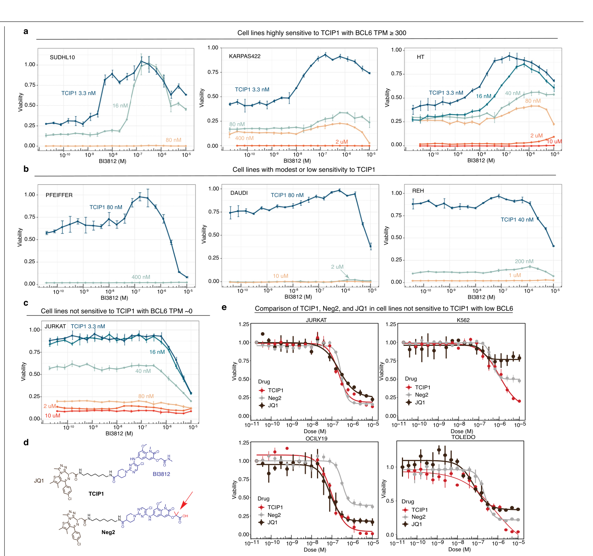
a. 在对TCIP1高度敏感的癌细胞系中，通过递增竞争性单价BCL6抑制剂 (BI3812) 挽救TCIP1诱导的细胞死亡；b. 在对TCIP1中度敏感的细胞系中的救援效应；或 c. 在对TCIP1完全不敏感的细胞系中的表现。d. JQ1、TCIP1以及Neg2 (其包含功能性BRD4抑制剂但BCL6结合亲和力极低，KD ~ 10 µM) 的化学结构与活性对比；e. 在低表达或不表达BCL6的细胞系中对比测试上述分子。对于a、b、c、e：n = 3个独立生物学重复，数值表示为均值 ± 标准差。a、b、c和e中的细胞活力曲线均在药物处理72小时后测定。
a. Rescue of TCIP1-induced cell death across cancer cell lines that are highly sensitive to TCIP1, b. moderately sensitive, or c. not at all sensitive. d. Comparison of JQ1, TCIP1, and Neg2, which contains a functional BRD4 inhibitor but very low-affinity BCL6 binder (KD ~ 10 µM) in e. cell lines that have low or no BCL6. For a,b,c, e: n = 3 biological replicates, mean±s.d. Viability curves in a, b, c, and e are after 72 h drug treatment.
Extended Data Fig. 3 | Biochemical studies of ternary complex binding affinities of TCIPs.
扩展数据图 3 | TCIP类分子三元复合物组装与结合动力学亲和力生物物理学研究
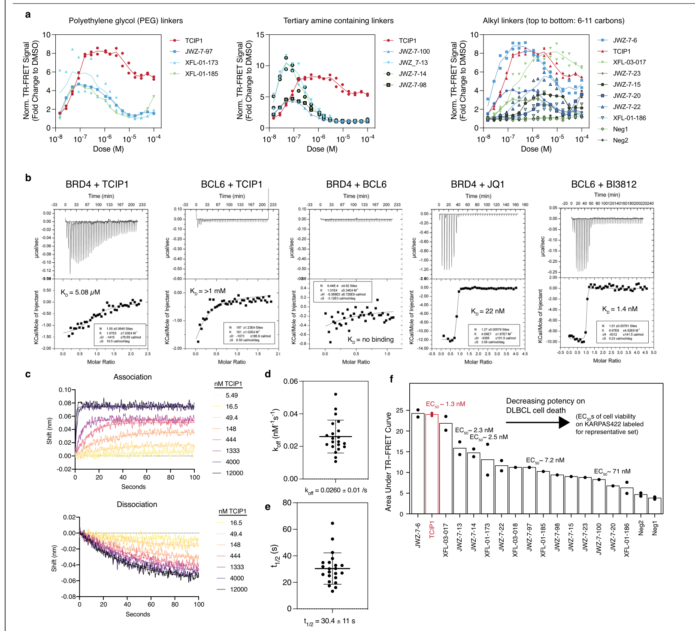
a. 具有相关化学结构的各系列TCIP分子诱导三元复合物形成的能力。每个图表中均绘制TCIP1作为基准对照。图中的每个数据点代表一个独立重复（由3个技术重复求均值得到），并绘制均值连接线。b. 等温滴定量热法 (ITC) 实验测定TCIP1与BRD4BD1、BCL6BTB及相关对照分子的二元亲和力。展示1至2次独立实验的代表性数据。c. 生物膜干涉技术 (BLI) 测定三元复合物动力学的代表性曲线（共3次独立实验），传感器探针尖端固载生物素化的BCL6BTB，样品孔中加入过量BRD4BD1并滴定不同浓度的TCIP1。d. 根据BLI解离曲线测定计算出的TCIP1解离速率常数 (koff) 以及 e. 三元复合物解离半衰期 (t1/2)；针对n = 3次独立重复，每个重复测试7至8个不同浓度，数值以均值 ± 标准差表示。f. TR-FRET曲线下面积 (AUC) 与各TCIP分子诱导癌细胞死亡的效力 (KARPAS422细胞，72小时细胞活力) 呈高度正相关。标注了代表性分子的细胞杀伤EC50值，为4个生物学重复的均值。TR-FRET曲线下面积中的每个数据点代表一次独立重复（为3次技术重复的均值）。
a. Ternary complex formation by TCIPs with related chemistries. TCIP1 plotted on every graph as a comparison. Each point represents an independent replicate which is the mean of 3 technical repeats, mean value line drawn. b. Isothermal calorimetry experiments to measure binary affinities of TCIP1 to BRD4BD1, BCL6BTB, and associated controls. Representative data from 1-2 independent experiments shown. c. Representative biolayer interferometry measurements (BLI) of ternary complex kinetics from 3 independent replicates shown with biotinylated BCL6BTB on the tip and excess BRD4BD1 in the well with titration of TCIP1. d. Off-rate and e. half-life of TCIP1 calculated from BLI dissociation curve measurements, 7-8 different doses for each of n = 3 independent replicates, mean±s.d. f. Area under curve of TR-FRET correlates with potency of TCIPs on cell death (KARPAS422 cells, viability at 72 h). Representative cellular EC50s labeled, mean of 4 biological replicates. Each area under the curve point represents an independent replicate which is the mean of 3 technical repeats of the TR-FRET experiment.
Extended Data Fig. 4 | TCIP1 induces apoptosis at every stage of the cell cycle.
扩展数据图 4 | TCIP1在细胞周期的各个不同时相均能强效触发细胞凋亡
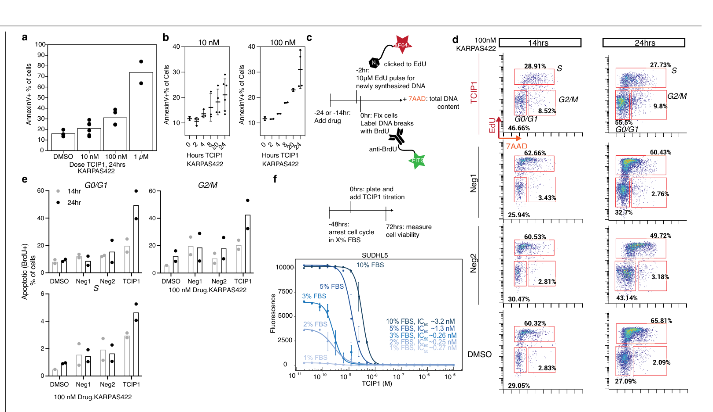
a. 通过流式细胞术检测膜联蛋白V (Annexin V) 阳性细胞比例，显示TCIP1处理24小时后呈剂量依赖性诱导细胞凋亡。b. 在KARPAS422细胞中TCIP1诱导细胞凋亡的时间动力学曲线。对于a和b：n = 2至6个生物学独立重复，视情况展示均值 (±标准差)。c. 利用末端脱氧核苷酸转移酶介导的dUTP缺口末端标记 (TUNEL) 染色，在单细胞水平上同步测定细胞周期进程与细胞凋亡的实验设计示意图。d. 与各阴性对照分子相比，TCIP1诱导细胞周期阻滞的效应分析，展示2个生物学重复的代表性数据（两个重复的完整流式细胞图见扩展数据图5）。e. 经100 nM TCIP1处理后，通过DNA片段化程度在细胞周期的每一个时相分别定量测得的细胞凋亡率，n = 2个生物学重复，展示平均值。f. 在SUDHL5细胞中通过血清饥饿使细胞阻滞于G0/G1期后，加入TCIP1测定细胞活力，n = 3个生物学重复，数值表示为均值 ± 标准差。
a. Dose-dependent induction of apoptosis at 24 h by TCIP1 as measured by AnnexinV-positive cells. b. Kinetics of TCIP1-induced apoptosis in KARPAS422 cells. For a, b: n = 2-6 biological replicates, mean(±s.d) shown as appropriate. c. Design of assay to measure cell cycle progression simultaneously with apoptosis using Terminal deoxynucleotidyl transferase dUTP nick end labeling (TUNEL) staining. d. TCIP1 induction of cell cycle arrest compared to controls, representative of 2 biological replicates, see Extended Data Fig. 5 for both replicates’ flow cytometry graphs. e. 100 nM TCIP1 induction of apoptosis as measured by DNA fragmentation at each stage of the cell cycle, n = 2 biological replicates, mean shown. f. Measurement of cell viability after cell cycle arrest in G0/G1 by serum starvation in SUDHL5 cells and TCIP1 addition, n = 3 biological replicates, mean±s.d.
Extended Data Fig. 5 | Cell-cycle block and apoptosis induction by TCIP1.
扩展数据图 5 | TCIP1引发的细胞周期阻滞与凋亡诱导流式细胞双参数散点图
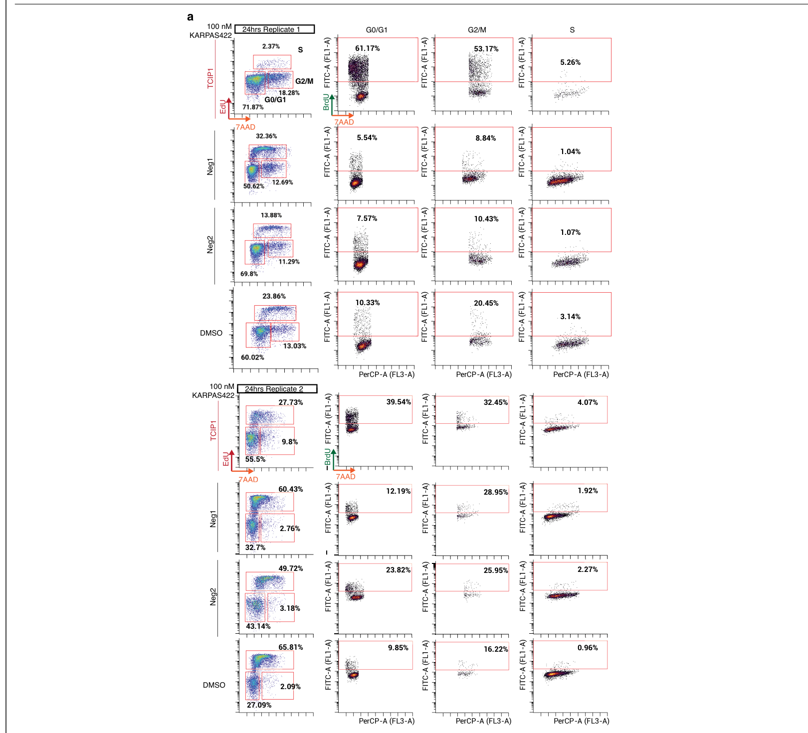
a. 在KARPAS422细胞中加入100 nM TCIP1处理24小时，同步测定细胞周期阻滞与细胞凋亡事件，图中展示在不同代数细胞上开展的两次独立实验的完整流式细胞散点图。流式设门基于补充信息 (Supplementary Information) 中详述的未染色阴性对照孔进行严格设定。
a. 100 nM TCIP1 addition at 24 h and simultaneous measurement of cell cycle block and apoptosis in KARPAS422 cells, two separate experiments on different passages of cells shown. Gates were set based on no-stain controls detailed in the Supplementary information.
Extended Data Fig. 6 | Robust and dose-dependent gene regulation by TCIP1.
扩展数据图 6 | TCIP1诱导的强效、剂量依赖性转录组基因表达调控网络
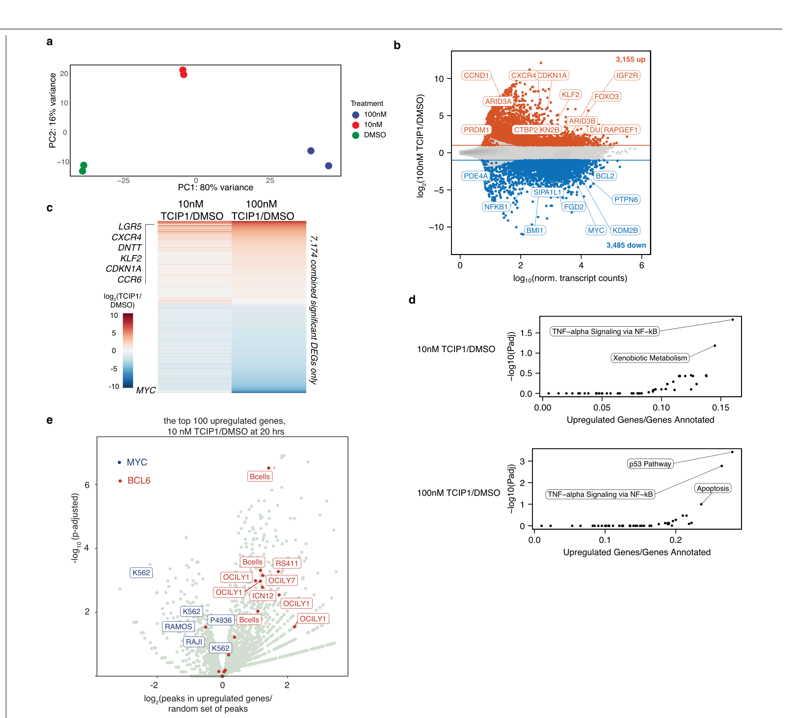
a. 在KARPAS422细胞的2个生物学重复中，加入TCIP1处理20小时后RNA-seq转录组测序数据的主成分分析 (PCA)。b. 在KARPAS422细胞中加入100 nM TCIP1处理20小时后的全基因组表达变化火山图。校正P值通过双侧Wald检验计算，并采用Benjamini-Hochberg法进行多重比较校正；显著性筛选阈值设定为padj ≤ 0.05且|log2(药物/DMSO)| ≥ 1，n = 2个生物学重复。c. 靶基因表达变化的剂量依赖性特征。d. 显著上调基因集的生物学通路富集分析 (基于MSigDB Hallmark标志通路数据库)。e. 基于血液谱系细胞中超过4,500个公共转录因子ChIP-seq数据集，对表达上调最显著前列基因启动子区的转录因子 (TF) 结合基序进行全面富集分析。对于d和e：校正P值通过双侧Fisher精确检验计算，并使用Benjamini-Hochberg方法进行多重比较校正。
a. Principal component analysis of RNA-seq data after addition of TCIP1 for 20 h in 2 biological replicates of KARPAS422 cells. b. Gene expression changes after addition of 100 nM TCIP1 for 20 h in KARPAS422 cells. Adjusted p-values computed by two-sided Wald test and adjusted for multiple comparisons by Benjamini-Hochberg. Significance cutoffs were padj ≤ 0.05 and |log2(Drug/DMSO)| ≥ 1), n = 2 biological replicates. c. Dose-dependent change in gene expression. d. Enrichment analysis of upregulated genes (MSigDB Hallmark Pathways). e. Analysis of TF binding at the top upregulated genes in over 4,500 public transcription factor ChIP-seq datasets from blood-lineage cells. For d, e: adjusted p-values computed by two-sided Fisher’s exact test and adjusted for multiple comparisons by Benjamini-Hochberg.
Extended Data Fig. 7 | Specific activation of gene expression by TCIP1 but not related controls.
扩展数据图 7 | TCIP1特异性激活基因表达，而相关对照分子无此转录重编程效应
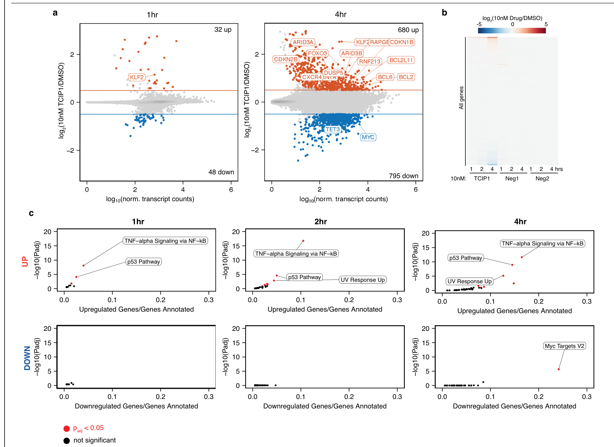
a. 在KARPAS422细胞中加入10 nM TCIP1处理1小时或4小时后的全基因组表达变化火山图（2小时处理的时间点见正文Fig. 4a）。校正P值通过双侧Wald检验计算，并采用Benjamini-Hochberg法进行多重比较校正；显著性筛选阈值设定为padj ≤ 0.05且|log2(药物/DMSO)| ≥ 0.5，n = 3个生物学重复。b. TCIP1在全转录组范围内的靶向特异性效应对比。对于阴性对照Neg1和Neg2，n = 2个生物学重复；对于TCIP1，n = 3个生物学重复。c. 显著上调与显著下调基因集的分子功能富集分析 (基于MSigDB Hallmark标志通路数据库)。校正P值通过双侧Fisher精确检验计算，并采用Benjamini-Hochberg法进行多重检验校正。
a. Gene expression changes after 1 h or 4 h addition of 10 nM TCIP1 in KARPAS422 cells. Changes at 2 h was shown in Fig. 4a. Adjusted p-values computed by two-sided Wald test and adjusted for multiple comparisons by Benjamini-Hochberg. Significance cutoffs were padj ≤ 0.05 and |log2(Drug/DMSO)| ≥ 0.5), n = 3 biological replicates. b. Specific effects of TCIP1 across transcriptome. For Neg1 and Neg2, n = 2 biological replicates. For TCIP1, n = 3 biological replicates. c. Enrichment analysis of upregulated and downregulated genes (MSigDB Hallmark Pathways). Adjusted p-values computed by two-sided Fisher’s exact test and adjusted for multiple comparisons by Benjamini-Hochberg.
Extended Data Fig. 8 | ChIP-seq analyses of BRD4, H3K27ac, and RNA Pol II in response to TCIP1.
扩展数据图 8 | TCIP1作用下BRD4、H3K27ac以及RNA聚合酶II表观染色质景观动态演变
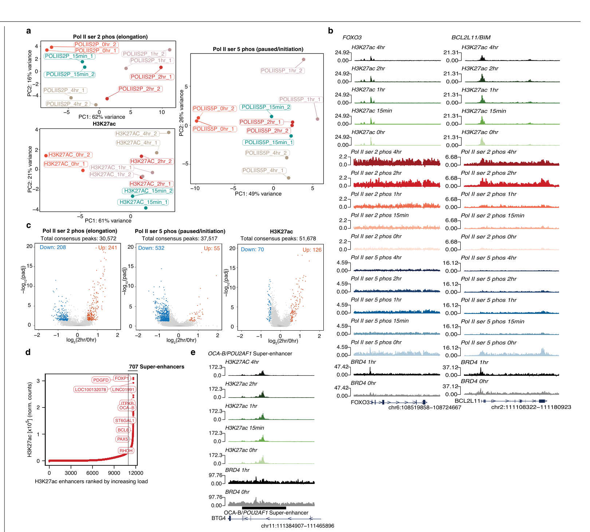
a. 在加入10 nM TCIP1处理各指定时间点 (0小时/DMSO、15分钟、1小时、2小时和4小时) 的各ChIP-seq实验主成分分析 (PCA) 散点图。b. 在BCL6靶基因以及TCIP1显著上调基因FOXO3和BCL2L11/BIM基因位点处，RNA聚合酶II Ser2磷酸化、Ser5磷酸化、H3K27ac以及BRD4的基因组浏览器精细比对轨迹图 (Browser tracks)。c. 加入10 nM TCIP1处理2小时后，RNA Pol II Ser2磷酸化、Ser5磷酸化以及H3K27ac富集峰改变的火山图。校正P值通过双侧Wald检验计算，并采用Benjamini-Hochberg法进行多重比较校正；富集峰在基于峰内reads数的相对对数表达 (RLE) 归一化后，依据padj ≤ 0.05且|log2(药物/DMSO)| ≥ 0.5的标准界定为差异显著峰。d. 基于H3K27ac ChIP-seq信号和ROSE生物信息学算法，在KARPAS422细胞中对全基因组常规增强子与超级增强子进行的等级排序与分类划分 (详见研究方法)。e. 加入TCIP1处理指定时间后，在已知的经典OCA-B超级增强子位点处BRD4和H3K27ac的ChIP-seq富集轨迹图。在b和e中，Pol II Ser2磷酸化、Pol II Ser5磷酸化以及H3K27ac轨迹图均经过果蝇染色质外源内参 (spike-in) 归一化并扣除Input对照背景；BRD4轨迹图经过测序深度及Input对照背景归一化。
a. PCA plots of each ChIP-seq experiment at indicated timepoints of 10 nM TCIP1 addition: 0hr (DMSO), 15 min, 1 h, 2 h, and 4 h. b. Browser tracks of Pol II Ser2 phos, Pol II Ser5 phos, H3K27ac, and BRD4 at BCL6-target genes and TCIP1-upregulated genes FOXO3 and BCL2L11/BIM. c. Volcano plots of Pol II ser 2 phos, Pol II ser 5 phos, and H3K27ac after 2 h 10 nM TCIP1 addition. Adjusted p-values computed by two-sided Wald test and adjusted for multiple comparisons by Benjamini-Hochberg. Peaks were classified as differential after reads in peaks-based regulative log expression (RLE) normalization and cutoffs padj ≤ 0.05 and |log2(Drug/DMSO)|≥0.5. d. Enhancer and super-enhancer classification in KARPAS422 cells based on H3K27ac ChIP-seq and the ROSE algorithm (Methods). e. BRD4 and H3K27ac ChIP-seq track at the known OCA-B super-enhancer after TCIP1 addition for indicated timepoints. In b, e, Pol II Ser2 phos, Pol II Ser5 phos, and H3K27ac tracks in are spike-in- and input-normalized, BRD4 tracks are sequence-depth- and input-normalized.
Extended Data Fig. 9 | Conversion of BCL6 auto-inhibitory pathway to feedforward loop.
扩展数据图 9 | 将BCL6自身负反馈抑制通路逆转为致命的前馈自放大致死循环
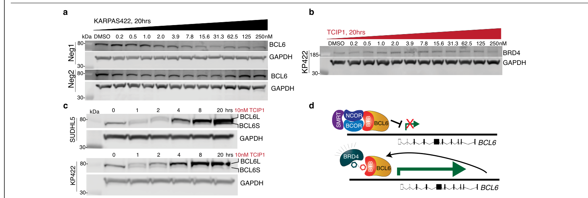
a. 阴性对照分子Neg1和Neg2在KARPAS422细胞中处理20小时对BCL6蛋白表达水平的影响。b. 在KARPAS422细胞中用TCIP1处理20小时对BRD4总蛋白水平的影响。c. 在两种不同的DLBCL细胞系 (KARPAS422与SUDHL5) 中加入10 nM TCIP1后，BCL6蛋白表达上调的时间动力学检测印迹图。a–c中的免疫印迹图代表2次生物学重复 (针对SUDHL5) 或3次生物学重复 (针对KARPAS422)。d. 将BCL6原有的内源性自抑制负反馈回路逆转为正向自放大前馈死循环回路 (positive feedback / feedforward loop) 的分子机制模型示意图。
a. Control Neg1 and Neg2 effect on BCL6 protein levels at 20 h treatment in KARPAS422 cells. b. Effect on BRD4 levels at 20 h treatment with TCIP1 in KARPAS422 cells. c. Kinetics of BCL6 upregulation in two separate DLBCL cell lines, KARPAS422 and SUDHL5, after addition of 10 nM TCIP1. Blots in a–c representative of 2 biological replicates (for SUDHL5) or 3 (for KARPAS422). d. Model for conversion of BCL6 auto-inhibitory circuit to a positive feedback loop.
Gerald Crabtree 与 Nathanael Gray 团队在《Nature》发表的这项研究，标志着肿瘤靶向治疗与邻近诱导药理学（Proximity Pharmacology）进入全新纪元。对于肿瘤生物学、化学生物学博士研究生及博士后而言，该工作在概念、药理动力学、表观遗传学和抗肿瘤合成机制上呈现出五大颠覆性突破：
【传统困境】过去 30 年肿瘤靶向药物（无论是激酶抑制剂还是 PROTAC 靶向降解剂）的核心教条是 Loss-of-Function (LoF)，即通过阻断催化口袋或泛素化降解致癌蛋白。然而，癌细胞基因组高度可塑，具有冗余存活旁路，即使彻底消除某个致癌因子（如 BCL6 或 MYC），癌细胞往往仅发生细胞周期停滞（G1 arrest）或通过代偿通路逃逸，极少迅速触发灾难性凋亡。
【TCIP 范式跃迁】TCIP 彻底颠覆了“必须杀死/降解致癌驱动物”的固有逻辑，转向 Gain-of-Function (GoF)。TCIP 利用癌细胞对致癌转录阻遏物（BCL6）的绝对依赖性与高表达丰度，将 BCL6 物理偶联至强效转录共激活因子 BRD4/P-TEFb。这不仅解除了 BCL6 对凋亡基因的抑制，更是反客为主，将原本护航淋巴瘤存活的 BCL6 改造为招募 RNA 聚合酶 II（Pol II）的杀伤性转录因子，在数小时内暴力开启内源性凋亡级联反应（PUMA, BIM, NOXA, FAS）。
【传统药理学教条】传统小分子抑制剂通常需要达到 >90% 甚至 >95% 的受体饱和占用率（Target Occupancy） 才能达到临床抗肿瘤疗效，这不仅需要极高给药浓度，还极易引发全身脱靶毒性与代谢负担。
【TCIP 催化级杀伤】定量表型与生物物理测量表明，TCIP1 在弥漫性大 B 细胞淋巴瘤（DLBCL）中表现出令人震撼的超强效价：EC₅₀ 低至 1.3 nM！而其单体结合分子 BI3812 单独给药即使在 10,000 nM 浓度下也无细胞毒性（效价提升超 7,000 倍）。更关键的是，全基因组结合与定量分析证实，仅需 1% 至 2% 的 BCL6 基因组结合位点被 TCIP1-BRD4 三元复合物占据，就足以释放足够剂量的 Pol II Ser2 延伸信号，不可逆地触发 Caspase-3/7 凋亡瀑布！这种“以极低占用率撬动全基因组致死表型”的特性，颠覆了经典受体占有药理学规律。
【表观动力学瞬间响应】精密的新生 RNA 测序（PRO-seq）与时间梯度 ChIP-seq 揭示了 TCIP1 的超快动力学机制：给药后仅 15 分钟，在全基因组数百个由 BCL6 占据的基因座上，RNA 聚合酶 II（Pol II）的 Ser2 磷酸化水平出现爆发式上调，表明原本滞留在启动子近端的 Pol II 暂停（Promoter-proximal Pausing）被瞬时释放，全面进入高速转录延伸。
【负自调节反转为正向自杀回路】在生理状态下，BCL6 进化出精密的负向自调节（Negative Autoregulation）机制：BCL6 蛋白结合在其自身基因的第一内含子（Intron 1）调控区，抑制自身转录，防止细胞内 BCL6 过度蓄积。然而，TCIP1 将这一抑制性结合位点改造成强效超级转录增强子：给药 2 小时内，内源 BCL6 mRNA 和蛋白出现爆炸式自杀性飙升。更多合成的 BCL6 进一步与 TCIP1 结合，形成正反馈“滚雪球”效应，疯狂催化下游 BBC3 (PUMA) 与 BCL2L11 (BIM) 的转录，直至细胞彻底裂解。
【杂合突变耐药克星】传统抑制剂最致命的阿喀琉斯之踵是靶点基因点突变（如激酶结构域 Gatekeeper 突变）或结合口袋构象变异。在 LoF 药物治疗中，只要部分等位基因发生突变不再结合药物，癌细胞即可存活。
【反式显性（in trans）杀伤】TCIP 诱导的转录激活是一种显性功能获得性表型（Dominant-positive phenotype in trans）。因为 TCIP 无需饱和结合所有 BCL6 蛋白，只要细胞内存在部分敏感性野生型或低亲和力 BCL6 拷贝与 TCIP1/BRD4 形成三元复合物，其招募的 CDK9/Pol II 延伸机械就能在染色质上直接转录凋亡基因。未结合药物的游离 BCL6 蛋白完全无法阻止凋亡基因的强力转录。这从原理上免疫了传统因“靶点残留或结合不充分”导致的即时耐药。
【精准“与门”逻辑架构】化疗药物及常规泛靶点药物最大的临床痛点是骨髓抑制与正常组织毒性。TCIP 呈现出合成生物学级别的布尔逻辑“与门（AND Gate）”：
致死输出 (Lethality) = [高丰度致癌受体 (BCL6/Driver High)] AND [活跃表观延伸机器 (BRD4/Pol II Competence)]
【正常组织完美绝缘】正常成熟 B 细胞、T 细胞、原代人成纤维细胞及血管内皮细胞中，由于缺乏 DLBCL 特有的超强 BCL6 依赖性染色质图谱与病理级表达量，对 TCIP1 展现出高达 >10,000 nM 的极端耐受性（安全治疗窗口超过 3–4 个数量级）。在 C57BL/6 小鼠体内以 10 mg/kg/day 剂量连续腹腔注射 5 天，小鼠体重平稳、脾脏生发中心未受破坏、肝肾组织学完全正常，同时在外周组织中实现了强效的靶点靶向结合，展现了极佳的成药性雏形。
TCIP 的问世不仅攻克了 BCL6 这一特定致癌转录抑制因子，更为现代肿瘤学、合成生物学与药物递送科学提供了三项具有深远意义的范式启示：
人类蛋白质组中超过 80% 的致癌转录因子（如 MYC, BCL6, EWS-FLI1, PAX3-FOXO1, IRF4, SOX2, STAT3）由于表面平坦、缺乏深层疏水催化口袋，且介导广泛而弥散的蛋白-蛋白互作（PPI），长久以来被药物化学界判定为“不可成药”（Undruggable）。
【TCIP 的解放性逻辑】过去人们试图寻找能以皮摩尔（pM）亲和力竞争性破坏转录因子与其 DNA 结合域或辅阻遏物界面的抑制剂，这种抑制剂极难设计。然而，TCIP 彻底改变了对配体亲和力的严苛要求：任何对靶蛋白具有中等亲和力（如微摩尔级别 μM）的表面结合分子，只要能与 BRD4 或其他转录共激活因子形成稳定的三元复合物，就足以被转化为“纳摩尔级细胞核自杀诱导剂”！ 这使大量以往在药物初筛中因无法阻断功能而被废弃的“弱结合分子”重获新生，极大地拓宽了抗肿瘤药物开发靶点库。
Crabtree 与 Gray 团队在研究中明确证明，TCIP 决不是针对 BRD4-BCL6 的偶然个例，而是一个高度模块化、可编程的普适化学生物学架构：
- TCIP2 原理验证 (Proof-of-Concept): 研究者通过将雌激素受体（ER）激动剂/调节剂（4-羟基他莫昔芬 4-OHT 衍生物）与 BCL6 抑制剂 BI3812 通过连接子偶联，成功合成了 TCIP2。在 ER 阳性/BCL6 阳性乳腺癌模型中，TCIP2 成功借用内源 ER 的转录激活功能，定向开启 BCL6 基因座的转录，高效触发细胞杀伤。
- 靶点库的横向拓展: 理论上，任何在特定恶性肿瘤中异常高表达或具有超级增强子驱动的致癌转录因子（例如尤文氏肉瘤中的融合蛋白 EWS-FLI1、横纹肌肉瘤中的 PAX3-FOXO1、滑膜肉瘤中的 SS18-SSX），均可通过设计双功能分子，招募转录激活因子（BRD4, MED1, p300/CBP, CDK9），将这些驱动肿瘤增殖的恶性分子就地转变为诱导凋亡或分化的杀伤性引擎。
尽管前景极其广阔，TCIP 要走向临床试验，仍需解决三大关键成药性挑战：
- 钩状效应 (Hook Effect / Prozone Phenomenon) 的体内窗口调控: 双功能分子在高浓度下容易形成“二元复合物饱和”竞争，呈现特征性的反 U 形非单调剂量响应。虽然 TCIP 仅需 1–2% 靶点占用率即可起效，但在体内必须精确控制最大血药浓度（Cmax）与稳态暴露量，防止剂量过载抑制三元复合物形成。
- 分子量与口服生物利用度 (DMPK 优化): TCIP1 的分子量约为 850 Da，违反了经典 Lipinski “五规则”（Rule of 5）。与 PROTAC 类似，未来的转化开发需要开展连接子（Linker）的刚性化改造、构象预组织（Conformational Pre-organization）、前药（Prodrug）设计或利用脂质纳米颗粒（LNP）递送系统，以提升其口服生物利用度与肿瘤靶向穿透力。
- 患者分层生物标志物 (Precision Biomarkers): 临床伴随诊断需精确评估患者肿瘤组织的：(1) BCL6 染色质结合广度与启动子突变；(2) 凋亡通路执行元件（BAX/BAK）的基因完整性；(3) 促凋亡与抗凋亡蛋白（如 BCL-2）的表达平衡（提示与 Venetoclax 联用的巨大潜力）。
邻近诱导化学（Chemical Inducers of Proximity, CIP）是化学生物学最具颠覆性的前沿领域。自 1993 年 Crabtree 与 Schreiber 提出双聚化概念以来，该领域经历了从“人工工程化系统”到“靶向蛋白降解”，再到如今“内源转录重构”的壮丽三阶跃：
利用双功能配体 FK1012 诱导 FKBP-FRB 人工受体二聚化，首次确立“化学诱导邻近”概念。
设计首个招募 E3 泛素连接酶的嵌合体，开创靶向蛋白降解（Targeted Protein Degradation, TPD）时代。
阐明沙利度胺/来那度胺作为“分子胶（Molecular Glue）”诱导 CRBN 与 IKZF1/3 发生非生理性互作降解。
将降解范围从胞质蛋白拓展至胞外分泌蛋白、膜受体及聚集性细胞器。
从“清除蛋白 (LoF)”跨越至“合成转录激活 (GoF)”，开启转录邻近诱导药理学全新版图！
| 技术维度 | 传统小分子抑制剂 (SMI) | PROTAC 靶向降解剂 | 分子胶降解剂 (Molecular Glue) | TCIP 转录诱导激活剂 (本篇论文) |
|---|---|---|---|---|
| 作用机制 (MoA) | 结合催化或变构口袋，阻断酶活性或破坏结合界面 | 双功能分子招募 E3 泛素连接酶，催化靶蛋白多聚泛素化降解 | 修饰 E3 连接酶复合表面，形成新互作界面诱导底物降解 | 双功能偶联致癌转录阻遏物与共激活因子（BRD4/P-TEFb），就地重塑转录机制 |
| 表型本质 (Phenotype) | 隐性功能丧失 (Recessive Loss-of-Function) | 隐性功能丧失 (Recessive Loss-of-Function) | 功能丧失 (Loss-of-Function) 或新形态降解 (Neomorphic) | 显性功能获得与自杀正反馈 (Dominant Gain-of-Function & Suicide Loop) |
| 靶点受体占用率要求 | 极高（通常需 >90%–95% 持续饱和） | 亚化学计量比催化（Sub-stoichiometric, 需 20%–50%） | 中等至较高（依赖三元复合物构象互补） | 超极低（仅需 1%–2% 基因组位点结合即可触发全基因组致死） |
| 典型细胞活性 ($EC_{50}$) | 微摩尔至中等纳摩尔 (0.1–10 μM) | 低纳摩尔至微摩尔 (10–500 nM) | 纳摩尔至微摩尔 (10–1000 nM) | 皮摩尔至低纳摩尔级 (TCIP1 EC₅₀ = 1.3 nM，较单体增效 >7,000倍) |
| 对单倍突变/点突变耐受 | 极脆弱：结合口袋单一突变即可诱发完全耐药 | 脆弱：靶蛋白突变或 E3 连接酶失活（如 VHL/CRBN 缺失）即耐药 | 脆弱：结合界面残基突变易导致底物脱落 | 极强：反式显性（in trans）杀伤，未结合等位基因无法阻止凋亡转录爆发 |
| 靶点适用空间 | 必须具备深层酶活催化口袋或高亲和力结合腔 | 需具备可用结合配体、且表面存在暴露的赖氨酸供泛素化 | 结构极其紧凑，但难以进行理性的计算机从头设计（De novo） | 任何致癌转录因子、融合蛋白或具有结合配体的表观调节元件 |
| 代表性分子/化合物 | Ibrutinib, Venetoclax, Gleevec | ARV-110 (Bavdegalutamide), ARV-471 | Thalidomide, Lenalidomide, CC-90009 | TCIP1 (BI3812-JQ1), TCIP2 (4-OHT-BI3812) |
| 核心挑战与瓶颈 | 靶点不可成药、旁路代偿耐药、毒性窗口窄 | 分子量偏大、E3 连接酶依赖、细胞耐药突变 | 理性设计极其困难、脱靶降解风险 | 钩状效应（需精确调控体内暴露量）、高分子量口服吸收优化 |
本套演讲脚本专门为博士生、博士后在顶级实验室 Journal Club、学术沙龙或博士资格答辩准备。脚本分为英文汇报原声讲稿（Verbatim English Spoken Narration）与中文讲解剖析，包含每张 Slide 的视觉呈现排布、核心科学逻辑与时间节奏把控（总时长控制在 16–18 分钟以内）：
在博士资格考试（Qualifying Exam）、学位论文答辩或顶级同行评审（Peer Review）中，评审专家通常会针对双功能分子药理学机制、体内毒性、脱靶与耐药提出高难度质询。以下精选 5 个最硬核的同行质询问题及学术级标准应答范式：
【标准应答范式】: 这是一个触及邻近诱导三元双功能分子本质的极高水平问题。我们可以从三维热力学平衡、游离血药浓度与催化极低占用率三个层面严密解答：
- 总血药浓度 ≠ 游离游动浓度（Free Drug Concentration）: 小鼠腹腔给药 10 mg/kg 后，虽然在血浆和组织中测得总浓度峰值可达微摩尔级，但大分子双功能药物（MW ~850 Da）通常具有很高的血浆蛋白结合率（PPB > 98%–99%），实际进入细胞核与染色质接触的游离有效药物浓度（Free Nuclear Fraction）通常在 10–100 nM 之间，完美落在形成三元复合物的“最高效致死区间”，远低于体外纯水相溶液中引发二元单体饱和的 5–10 μM 临界阈值。
- 1.3 nM 极高亲和力与微摩尔失效区相隔 3 个数量级: TCIP1 的细胞杀伤 EC₅₀ 为 1.3 nM，而钩状效应显著显现的下限通常在 1,000–5,000 nM 之后，二者之间存在接近 1,000 倍的极为宽广的治疗浓度窗口（Therapeutic Window），这与传统亲和力较差（μM 级）的 PROTAC 形成鲜明对比。
- 极低占用率（1–2%）的容错机制: PROTAC 需要持续催化周转，而 TCIP 仅需瞬时极低比例（1–2%）的三元复合物结合在启动子区释放 Pol II，即可引发不可逆的内源性 Caspase 级联激活。因此，即便局部微环境存在部分二元饱和，残留的三元复合物浓度依然足以驱动细胞凋亡。在临床方案中，可以通过稳态低剂量持续输注（Continuous Infusion）或皮下缓释方案，将稳态血药游离浓度精准维持在 10–50 nM，从而彻底避开钩状效应。
【标准应答范式】: 这一问题直击恶性肿瘤细胞与正常生理细胞的本质表观遗传差异：
- 致癌超级增强子与染色质构象的极度脆弱性（Oncogenic Addiction）: 弥漫性大 B 细胞淋巴瘤（DLBCL）的染色质处于病理性的转录高负荷状态，其 BCL6 基因座常发生 3q27 染色体易位或体细胞启动子超突变，丢失了生理性刹车，全基因组高度依赖 BCL6 对 PUMA, BIM 等促凋亡基因的持续强力压制；一旦引入 TCIP1，病理性的促凋亡超级增强子立刻引爆。
- 正常生发中心 B 细胞的多维促存活信号网络保护: 正常生发中心 B 细胞处在滤泡树突状细胞（FDC）和 T 滤泡辅助细胞（Tfh）极其严密的微环境信号支持下，接受来自 CD40L、BCR 强信号以及 IL-4/IL-21 等外源细胞因子的强力抗凋亡保护（如内源性高水平 MCL-1, BCL-xL），这些生理信号网络能够有效对冲瞬时转录扰动。
- 细胞周期与动力学差异: 淋巴瘤细胞增殖失控，处于极高速的转录延伸状态，对 Pol II Ser2 暂停释放高度敏感；而小鼠体内的大多数淋巴组织处于相对稳态，外周幼稚 B 细胞和记忆 B 细胞几乎不表达 BCL6。因此，小鼠脾脏生发中心在 5 天短期暴露下表现出极高的组织耐受性。
【标准应答范式】: 这是一个极具洞察力的表观遗传调控机制问题，作者在正文 Figure 3 和 Figure 4 中通过高精度多组学动力学数据作出了无可辩驳的证明：
- 空间位点特异性（Locus Specificity）由 BCL6 配体精确锚定: TCIP1 不是游离在核内泛激活转录，而是由高亲和力配体 BI3812 物理定位在全基因组数百个内源 BCL6 识别位点（Motif）上。由于 BCL6 进化上的生理核心功能就是结合并抑制促凋亡基因（PUMA, BIM, NOXA, FAS, CDKN1A），因此 BRD4/P-TEFb 是被靶向递送至这些促凋亡基因的启动子与增强子区，就地解除压制并强效点火。
- MYC 等致癌基因在 2 小时内被剧烈下调而非激活: PRO-seq 和 RNA-seq 数据惊人地显示，TCIP1 给药后，MYC 以及一系列增殖相关基因的转录在 2 小时内迅速崩溃下降（降低超 70%–80%）。这是因为 JQ1 结构域局部隔离消耗了游离 BRD4，同时全基因组转录资源被疯狂分流并聚焦到 BCL6 激活位点上，加上促凋亡因子的过表达触发了负反馈转录重构，彻底摧毁了原癌基因的维持条件。
【标准应答范式】: 这一对比构成本文最具颠覆性的学术贡献，可从四大维度全面论证 TCIP 的代际领先优势：
| 比较维度 | BCL6 PROTAC 降解剂 | TCIP 转录诱导激活剂 |
|---|---|---|
| 致死活性效价 | 通常 EC₅₀ 在 50–500 nM 之间 | EC₅₀ 低至 1.3 nM（杀伤活性强 50–100 倍以上） |
| 生物学后果 | 蛋白消失后，染色质仅缓慢解除抑制，常导致 G1 期阻滞而非迅速凋亡 | 直接招募 Pol II 强力转录 PUMA/BIM，数小时内直接爆发凋亡 |
| 受体占用与反应速率 | 依赖泛素连接酶多聚泛素化周转，消除周期需 12–24 小时 | 15 分钟实现 Pol II Ser2 暂停释放，极低占用率（1-2%）即可致死 |
| 耐药逃逸风险 | 肿瘤常通过下调或突变 E3 连接酶（VHL/CRBN/Cullin）产生继发性耐药 | 直接利用内源基础通用转录机械（Pol II/CDK9），几乎不可能丢失转录元件 |
【标准应答范式】: 基于 TCIP 的作用链条，肿瘤细胞可能在靶点结合口袋、转录调节回路、以及下游凋亡执行端三个节点发生耐药演化：
- 结合口袋突变 (BCL6 BTB Domain Mutations): 肿瘤细胞可能在 BI3812 结合沟槽（如 N21, H14 等关键残基）引入点突变，阻止小分子结合。【应对方案】: 研发第二代具有不同母核或多重接触构象的 BCL6 结合配体，或利用共价结合（Covalent ligand）锁定口袋。
- 凋亡执行通路缺陷 (Apoptotic Machinery Deficiencies): 肿瘤细胞通过获得性缺失促凋亡效应因子 BAX 或 BAK，或突变下调 PUMA，使得转录激活信号无法有效转导至线粒体外膜通透（MOMP）。【应对方案】: 临床前将 BAX/BAK 完整性纳入伴随诊断基因检测；对于突变缺陷型，可设计招募其他致死通路（如焦亡 Pyroptosis 或铁死亡 Ferroptosis）转录调控因子的新型 CIP。
- 抗凋亡蛋白代偿性过表达 (BCL-2 / MCL-1 Upregulation): 淋巴瘤细胞常通过扩增 BCL-2 抵消 PUMA/BIM 的促凋亡作用。【最优临床联用方案】: TCIP1 与 FDA 批准的 BCL-2 抑制剂 Venetoclax（维奈克拉）强强联合！ TCIP 负责上调 PUMA/BIM，Venetoclax 负责拔除细胞内残余的 BCL-2 保护伞，二者在纳摩尔级别产生极其剧烈的“合成致死协同（Synthetic Lethality）”，彻底封闭肿瘤耐药逃逸窗口。